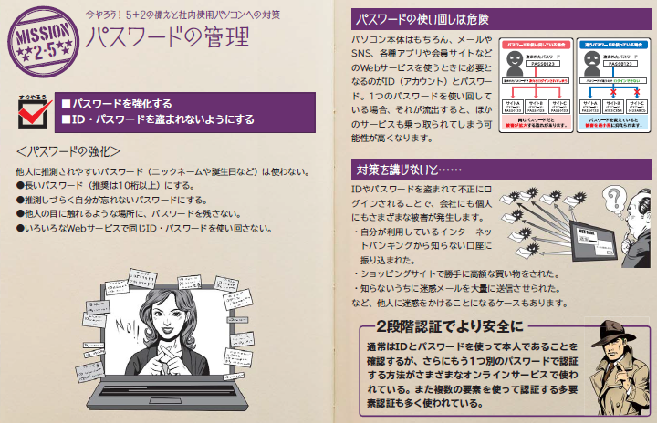
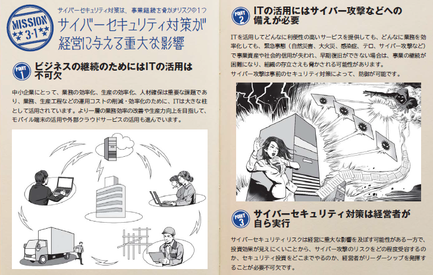
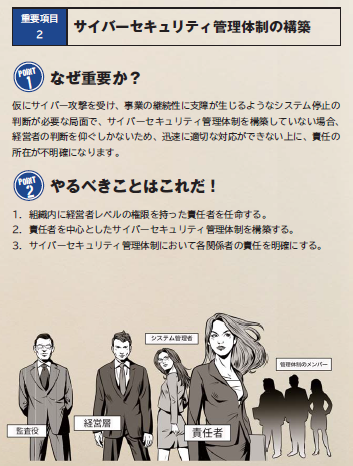
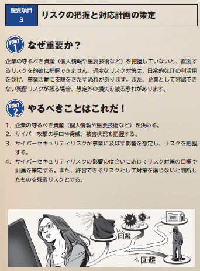
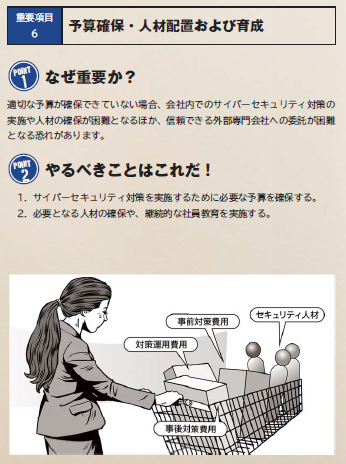
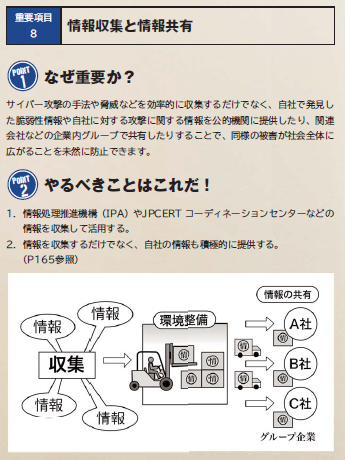
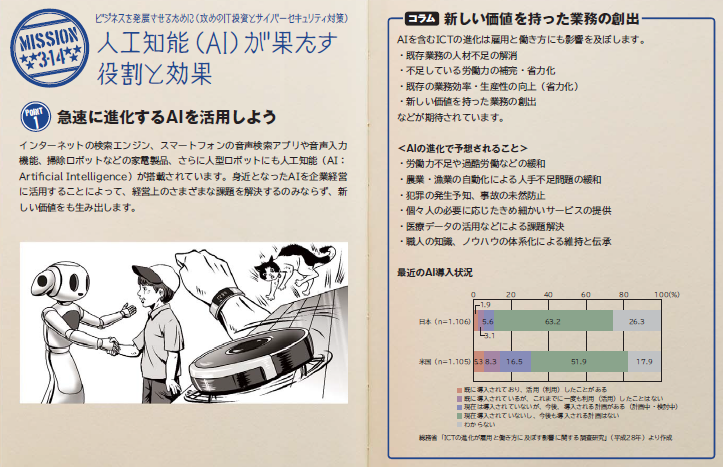

- Sec01-01「中小企業向けサイバーセキュリティ対策の極意」解説書
- 変更履歴
- 【2018年10月31日版】タイトル変更
- 【2018年9月26日版】ポータルサイト追加
-
- Top
- 更新情報
- セキュリティトピック 所長の部屋
- PickUp
- 更新情報
- セキュリティコラム
- Episode1：不正送金
- Episode2：標的型攻撃
- Episode3：ワンクリック詐欺
- サイバー脅威サイバーゴースト
- #1 ドッペルゲンガー：標的型攻撃
- #7 ベラム：インターネットバンキング不正送金
- #9 テラー：ワンクリック詐欺
- 東京都の取組
- 東京都のサイバーセキュリティ支援
- Tcyss（ティーサイス）とは？
- サイバーセキュリティ対策促進助成金活用例
- 外部の情報紹介
- その1 情報サイト編
-
- 政府機関や民間事業者が提供し、情報処理推進機構（IPA）が管理している、サイバーセキュリティ情報ポータルサイトだ。
- 「被害に遭ったら」「対策する」などのテーマごとに、厳選されたサイバーセキュリティ情報掲載ページを紹介しているぞ。
- 情報掲載ページがカテゴリ分けされているので、必要な情報に適したサイトを確認することができる。
-
- 情報処理推進機構（IPA）が提供している、中小企業の情報セキュリティ対策支援サイトだ。
- 自社の対策状況を分析できる「5分でできる！自社診断」や、中小企業自らが、情報セキュリティ対策に取組むことを自己宣言する「SECURITY ACTION」などを紹介しているぞ。
-
- 総務省が提供している、一般利用者から企業利用者まで、幅広くサイバーセキュリティ情報を掲載しているサイトだ。
- 「企業・組織の対策」ページでは、組織幹部向け、社員全般向け、情報管理担当者など、対象者別に分類した情報を、初心者にもわかりやすく記載しているぞ。
- 一般利用者向けの情報や、用語辞典なども公開しているので、あわせて参考にするのもおすすめだ。
-
- 内閣サイバーセキュリティセンター（NISC）が提供している、サイバーセキュリティ啓発サイトだ。
- 「会社で」ページでは、企業に関係するサイバーセキュリティ情報を公開している。
- 特筆すべきは、NISC作成の「ネットワークビギナーのための情報セキュリティハンドブック」のデータや、アプリが入手できることだな。
-
- 「中小企業向け サイバーセキュリティ対策の極意」と併せて読んでいただければ、より知識が深まること請け合いだ。
-
- その2 ガイドライン編
-
- https://www.ipa.go.jp/files/000055520.pdf
- 情報処理推進機構（IPA）が提供している、中小企業のサイバーセキュリティに関する具体的な対策を示すガイドラインだ。
- 会社内のサイバーセキュリティを向上させるために、必要なことが網羅されているぞ。
-
- 解説書
- 経済産業省が提供している、サイバーセキュリティ対策を推進するための経営ガイドラインだ。
- サイバー攻撃から企業を守る観点で、経営者が認識する必要のある「3原則」、及び経営者が情報セキュリティ対策を実施する上での責任者となる担当幹部（CISO等）に指示すべき「重要10項目」をまとめているぞ。
- 高度な内容も記載されているので、IPAがガイドラインの解説書を提供している。
- 併せて確認するといいだろう。
-
- その3 情報収集編
-
- ドキュメント
-
- ドキュメント
-
- その4 個別案件編
-
- ドキュメント
-
- ドキュメント
- 情報処理推進機構（IPA）が提供している、ウェブサイトの新規開設・刷新において、クラウドサービスなどの運用形態別のメリット・デメリットや、セキュリティ対策に必要な確認項目などを整理した手引きだ。
- 決済機能を持つウェブサイトを運営する際に必要な検討項目なども示されているので、サイト新設の際、また、サイト見直しの際に確認してみてはどうだろうか。
-
- 相談窓口
- 電話・ホームページ専用フォームでのご相談
- 相談フォーム
-
- 相談電話
- ☎03-5320-4773
- 窓口でのご相談
- 東京都産業労働局商工部 相談窓口
- 東京都西新宿2-8-1 都庁第一本庁舎20階北側
- 【適用範囲】目的、対象、期待する効果
- 目的
-
- システム管理者が、経営者に対して、情報セキュリティ対策の実施に投資することを説得できるように
- 経営者が情報セキュリティ対策の必要性を認識し、システ管理者に対して、対策の実施を指示するように
-
- 対象者
- 経営者層
- システム管理者がいない組織ではシステム管理者の役割は経営者が負う
- システム管理者層
- システム管理者がいる組織
- ITパスポート試験レベル、基礎情報処理技術者試験レベル
- 期待する効果
-
- 業種業態を問わず、多種多様な意識を持つ経営者が、情報セキュリティ対策の必要性を認識して、自組織の問題として、情報セキュリティ対策を様々なスキルレベルのシステム管理者に指示し、具体的に一定レベルの対策を実施できるようになること
-
- 内容構成
-
- 経営者・システム管理者の机の上に置いて、手引書としていつでも参照できるもの
- 事例、緊急時対応、恒久的対策、知っておくべき知識
-
- イントロダクション
- ケーススタディ
- はじめに
- 約400 倍
- 情報通信研究機構（NICT）サイバーセキュリティ研究所サイバーセキュリティ研究室が2016 年の1 年間で観測したサイバー攻撃に関連する通信量は約1,281 億パケットでした。観測を始めた2005 年は約3.1 億パケットでしたから、11 年間で413 倍に増加しています。
- 2020 年東京が狙われている
- 2020 年には東京2020 オリンピック・パラリンピックが開催されます。2016 年に開催されたリオデジャネイロオリンピックでは、テロと同様にサイバー攻撃が大きなリスクとして懸念され、2,300 万件のアタックをブロックしたと報告されています。また、オリンピックの中核施設に隣接した変電所を運営している電力会社Light 社が期間中に受けた攻撃は、1,300 万件に達しました。東京2020 大会でも同様のサイバー攻撃が予想されます。
- 狙われるのは中小企業
- サイバー攻撃の標的は政府・自治体や重要インフラだけではありません。こうした大規模なサイバー攻撃には、数十万台の端末から一斉攻撃をかける手口があり、それに使用される端末は攻撃者に乗っ取られた端末です。そして比較的セキュリティの甘い中小企業の端末が狙われています。最近では、大企業は防御が厳重なため、防御の甘い取引先の中小企業を狙い、そこから大企業のシステム内部へ侵入するケースも増えています。
- セキュリティ対策はなぜ必要なのか？
- インターネットが社会生活の隅々まで普及している今、サイバー攻撃は社会機能や国民生活を脅かす大きな問題となっています。個人も企業もセキュリティに関する正しい知識を身に付け、必要な対策を実践していくことがとても重要になっています。いったんサイバー攻撃を受けて被害を受けると、金銭の損失はもとより、顧客の喪失、業務の喪失など、経営に直結する重大なリスクが発生します。経営者が責任を問われたり、場合によっては株主代表訴訟の対象にもなります。
- すぐやろう！ サイバーセキュリティ対策
- セキュリティ対策は必要だと分かっていても直接利益を生み出すものではない、難しくてよく分からない、社内にIT のことが分かる人材がいないなどの理由から、手つかずのままにしていませんか？最優先で実施すべき対策はそんなに難しいものではありません。基本的な対策を実施することで多くの攻撃を防ぐことができます。
- 備えあれば憂いなし
- 本書は、サイバー攻撃の最新の手口から、中小企業でも実施できる基本的な対策まで分かりやすくまとめました。
- 【現状認識】何故、情報セキュリティ対策を行う必要があるのか
- 実際の被害を例示し、自組織においても対策の必要性を認識できるように
- 知っておきたいサイバー攻撃の知識
- 標的型サイバー攻撃による情報流出
- 企業を襲うサイバー攻撃は様々種類がります。サイバー攻撃に潜む被害と対策をまとめました。今、知識をつけよう。
- 標的型攻撃メールとは
- 近年、特定の組織や個人を狙って情報窃取等を行う標的型攻撃が多くなっています。不特定多数に対する攻撃ではなく、ある特定の対象を狙って攻撃が行われることから、「標的型攻撃」の呼び名があり、中でもメールを使った「標的型攻撃メール」はソーシャルエンジニアリングの手口を使っており、だまされやすいため注意が必要です。
- メール受信者が不審を抱かないように様々な騙しのテクニックが駆使されているため、メール受信者は本物のメールと勘違いしてしまい、ウイルス感染の仕掛けが施された添付ファイルを開いたり、メール本文に記載されたウイルス感染の仕掛けが施されたサイトへのリンクをクリックしたりしてしまいます。
- 添付ファイルを実行したり、本文のリンク先にアクセスしたりすると、遠隔操作ウイルス（RAT :Remote Access Trojan／Remote Administration Tool）に感染し、新たなウィルスのダウンロード、組織システム内へのウイルス拡散、情報収集、機密情報の外部への漏えい、システムの破壊といった大きな被害へ発展することになります。
- しかもそれら一連の攻撃は、情報が外部に漏えいしたことに気付くまで、長期間にわたり行われることが多いのです。
- 入口対策から内部対策・出口対策
- 標的型メールの見分け方
- 標的型攻撃メールには、受信者が不審をいだかないように、高度な騙しのテクニックが用いられる。
- ◆知らない人からのメールだが、メール本文のURL や添付ファイルを開かざるを得ない内容（取材申込み、講演依頼、履歴書送付、就職活動や製品の問合せ、クレーム、アンケート）
- ◆心当たりのないメールだが、興味をそそられる内容（議事録、演説原稿などの内部文書送付等）
- ◆これまで届いたことがない公的機関からのお知らせ（情報セキュリティに関する注意喚起、感染症流行情報、災害情報）
- ◆組織全体への案内（人事情報、新年度の事業方針、資料の再送、差替え）
- ◆ID やパスワードなどの入力を要求するメール（メールボックスの容量オーバーの警告、銀行等からの登録情報確認）
- ◆メール本文がおかしい（日本語の言い回し、日本語で使用されないフォント（繁体字等）、表示URLとリンク先URLが異なる、署名の内容が誤っている）
- ◆添付ファイルがある（実行形式ファイル（exe/scr/cpl他）、zipファイル、データ形式ファイル、ショートカットファイル、アイコン（文書ファイル等への）偽装、ファイル拡張子の偽装（二重、大量の空白文字等））
- 標的型メール対策
- 標的型攻撃メールを発見した場合は、発見者が自分に届いたメールだけを削除するだけでは対応として不十分
- 不審メールに気付いたメール受信者は、組織で定められている運用ルールに従い、組織内の情報集約窓口に速やかに報告する。
- 情報集約窓口に集約された情報を基に、情報システム担当部門などは、当該メールを含め類似の不審メールが他に届いていないかを、メールサーバのログなどにより調査する。
- 情報システム担当部門などは、不審メールが届いたすべての端末で、添付ファイルを開いたり、不審なURL にアクセスしたりしていないかなどを確認する。
- 情報システム担当部門は、利用者が不審なメールに気づいた際の情報集約の体制、及び運用ルールを整備するとともに組織内に周知し、迅速に情報の集約が行える体制を整える必要がある。
- さらに、これまでの攻撃の初期侵入防止（入口対策）対策に加え、利用者（社員等）が標的型攻撃メールを見抜けずにウイルスに感染してしまうなどの入口対策が突破され内部に侵入されることを前提とした上で、「侵害拡大防止」、及び「監視強化」を目的としたシステム設計（内部対策）も講じていく必要がある。
- ウェブサービスへの不正ログイン
- ウェブサービスから窃取したIDとパスワードを用いて、不正ログインされる被害が発生している。利用者が同じパスワードを複数のウェブサービスで使いまわしている場合、被害が拡大する。
- ウェブサービスに不正ログインされることにより、個人情報の漏えいや金銭被害等、様々な被害が発生する可能性がある。
- ＜被害手口＞パスワードリスト攻撃 脆弱なウェブサイトから窃取したIDとパスワードの組合せを用い、他のウェブサイトに不正ログインを試みる方法である。パスワードの推測 名前や誕生日」、IDと同じ文字列、連続した英数字等、安易で使われやすい文字列をパスワードとして攻撃者が入力し「、不正ログインをこころみる。
- ウエブサイトの改ざん
- 閲覧するだけでウイルスに感染するよう、CMS等の脆弱性を悪用しウェブサイトが改ざんされる事例が多く発生した。
- ウェブサイトを改ざんされると、ウェルスを配布する水飲み場攻撃への悪用や政治的主張の掲載等され、結果ウェブサイト運営者が社会的信用を失う影響が懸念される。
- ＜被害手口＞ソウフトウエア製品の脆弱性 ＯＳ，ミドルウエア等やCMS及びプラグインの脆弱性を悪用される。ソフトウエアの脆弱性 広く使われているオープンソースや市販のソフトウエア製品は、攻撃手法が判明すれば、多くの攻撃対象を攻撃できる。
- ウエブサービスからの個人情報の搾取
- ウェブサイトの脆弱性を突き、ウェブサービスが保有する住所や氏名等の個人情報が窃取され事件が国内で発生した。
- ウェブサービスは様々なソフトウェアで構成されており、セキュリティ上の問題を内包しやすい。また、インターネットに公開さているため、攻撃者の標的になりやすい。
- ＜攻撃手口＞独自に開発したウェブアプリケーションの脆弱性（脆弱性の作りこみ）ソフトウェアの脆弱性 ＯＳ／ミドルウエア等のサーバーソソフトウェアに存在する脆弱性を悪用する
- インターネットバンキングやクレジットカード情報の不正利用

- ウイルス感染やフイッシング詐欺により、個人および組織から情報を搾取し、本人になりすましした不正送金や利用が行われた。
- サイトが十分なセキュリティｌ機能を提供していなかったり、利用者がセキュリティ対策怠ったりしている。攻撃者はウイルス感染やフイッシング詐欺等の攻撃により、利用者から情報を搾取し、利用者になりすまし不正送金等を行っている。
- ＜攻撃者の手口＞ウイルス感染（金融情報の取得に特化したウイルスも存在する）とフイッシング詐欺が挙げられる。
- 悪意のあるスマホアプリ
- スマートフォンにインストールしてしまった悪意あるアプリにより、スマートフォン内の情報が窃取されてしまう。公式マーケットに悪意あるアプリケが紛れ込む事例もあり、利用者は一層の注意が求められる。
- 画面上にはアプリのアイコンを表示せず、スマートホンに保存されているメール、写真、位置情報等を秘密裏に収集して攻撃者へ送信するアプリやスマートフォンを乗っ取ることが可能なアプリが見つかっている。
- ＜攻撃手口＞公式マーケットに悪意あるアプリを公開。公式マーケットは安全と思い込んでいる利用者が安易インストール。インストール後アップデート時に悪意ある機能が追加される。利用者に同意なく勝手に悪意あるアプリをインストールさせる。
- 巧妙・悪質化するワンクリック請求
- アダルトサイトや出会い系サイトといった有料サイトや、セキュリティソフト購入推奨等の金銭請求画面が表示され、金銭を不正に請求されるワンクリック請求の被害が発生している。
- ブラウザに「ウイルスを検出した」という警告が表示され偽りのウイルスソフトを購入させたり、スマートフォンのシッター音を鳴らし不安や焦燥感を煽り、支払いを誘発させる巧妙な手口も発生している。
- ＜攻撃の手口＞・悪意あるウェブサイトの閲覧・差出人を偽造したメールに記載されたURLのクリック・悪意のあるソフトウェアのダウンロード 偽りメッセージの誘導により悪意のあるサイトをアクセス中に発生する。・悪意あるスマートフォンアプリインストールした時に偽りメッセージによる誘導
- ランサムウェアを使った詐欺・恐喝
- 悪意あるプログラムによってPC内のﾌｧｲﾙ」が閲覧・編集できない形」に暗号化され、ﾌｧｲﾙ復元の身代金として、利用者が金銭を要求される被害が増えている。このプログラムを「ランサムウェ」と呼ぶ。
- メールの添付ファイルやウェブサイトの閲覧等を介して、利用できないようPC内のファイｌㇽを暗号化し、復号のために組織や個人に金銭を要求するランサムウェアの被害が拡大した。
- ＜攻撃の手口＞ランサムウェア添付したメールを送付し、添付を開かせ感染。
- サービス妨害によるサービス停止
- ハッカー集団によるウエブサイトを狙ったサービス妨害攻撃により、ウエブサイトが高負荷状態となり、利用者がアクセスできなくなる被害が発生した。攻撃手口は攻撃者に乗っとられた複数のマシン（ボットネット）等から大量に負荷をかけるDDoS（分散型サービス妨害）攻撃が主流であった。
- DDoS攻撃手口 ボットネットの悪用による標的組織のサーバ負荷をかける攻撃。DDoS攻撃手口 ボットネットの悪用による標的組織のサーバ負荷をかける攻撃・リフレクター攻撃 送信元を標的組織のサーバに詐称して、ルータやDNSの応答結果を大量に送り負荷をかける。・DNS水責め攻撃 ボットネット等で、標的組織のランダムなサブドメインへ問い合わせ、ドメイン名の権威DNSサーバに負荷をかける攻撃。
- 内部不正による情報漏えいとそれに伴う業務停止
- 内部の人間が悪意を持つと、正当な権限を用いて情報を窃取出来る為、情報の重要度に応じたアクセス権限の設定や離職者のアクセス権の抹消等、厳格な管理と監視を継続的に行う必要がある。
- 組織内部の権限を持つ職員や離職者が悪意を持ち、内部情報を外部に持ち出し、販売したり、私的に利用する事件は、幾度も発生している。顧客情報や内部情報の漏えいを引き起こした企業・組織には、賠償や株価下落、信用失墜による競争力の低下等、事業に多大な悪影響が発生する。
- ＜対策/対応＞「資産の把握と体制の整備」は、組織が保持する資産を重要度等分類し、経営者層が責任を持ち、積極的に推進することが重要である。内部不正の対策は、多肢に渡って網羅的に行う必要がある。IPA「組織における内部不正ガイドライン」 参照
- 脆弱性対策情報の公開に伴い公知となる脆弱性の悪用増加
- 攻撃者は公開さている脆弱性対策情報によりその対策がなされていないシステムやソフトウエアを狙っており、近年、脆弱性対策情報の公開から攻撃までの期間が短くなっている傾向がある。
- 脆弱性対策情報の公開から利用者が対策を実施するまでのタイムラグを利用し、攻撃者は脆弱性を悪用する攻撃を行う。
- ＜要因＞・脆弱性対策情報を知らない・利用している製品ソフトが影響を受けることを知らない・公開された対策をすぐに実施できない。
- IoT機器を踏み台にした攻撃
- 自動車、情報家電、医療機器、インフラ設備、流通用機器等、日常生活に関する多種多様な機器がインターネットにつながるようになってきた。従来インターネットねつながることを想定していない機器が、インターネットにつながることにより脆弱性が顕在化してきた。
- 攻撃者がインターネット越しにその機器の脆弱性や設定不備をついて攻撃を行い、不正アクセスやウイルス感染等が行われる可能性がある。
- ＜攻撃手口＞DoS/DDoS Lotに関する機器の脆弱性を悪用 他機器からのウイルス感染
- 中小企業におけるサイバー攻撃被害の例
- 【コラム】
- 正確に何がいっ起きたか。？
- インシデント対応の最も大切な部分のひとつであり、最も省略されがちなのが、学習と改善である。各インシデント対応チームは新しい脅威に対して進化し、技術を向上させ、教訓を学ぶべきである。
- ①正確に何がいっ起きたか。②スタッフとマネジメント層がどの程度うまく事件に対処したか。文書化された手順に従ったか。それは適切だったか。③すぐに必要なった情報はなにか。④復旧を妨げたかもしれないステップやマネジメント層は、どのような行動をとるか。⑤次に同様なの事件が起きた場合、スタッフやマネジメント層は、どのような違った行動をとるか。⑥どのような是正措置があれば、将来にわたって同じような事件が起きるのを防げるか。⑦将来事件を検出、分析、軽減するために、どのようなツールやソースが追加で必要」となるか。
- コンピュターセキュリティインシデント対応ガイド NIST800-61（参照IPA和文訳)
- 標的型攻撃について
- 標的型攻撃とはメール添付ファイルやウェブサイトを利用してPCにウイルスを感染させ、そのPCを遠隔操作して組織や企業の重要情報を窃取する攻撃。
- 攻撃手口は、ソーシャルエンジニアリング（人の行動のミス等につけ込む手口）を駆使した攻撃により主に以下のシナリオに沿って遂行される。標的型攻撃メールでは、実在する企業や官公庁から窃取したメール本文や差出人アドレスを使いメール受信者の警戒感を解く。その上で業務に関係ありそな添付ファイル、URLリンク先をクリックさせる。攻撃シナリ段階でソーシャルエンジニアリング(騙しの手口）が使われるのは主にどの段階か？
- <攻撃シナリオ>（１）計画立案（２）攻撃準備（標的組織の調査）（３）初期潜入（ウイルス感染）（４）基盤構築（感染拡大）（５）内部侵入・調査（文書や情報探作）（６）目的遂行（外部へのデータ送信）（７）再侵入
- 【参考】【現状認識】最近の主な出来事（情報セキュリティ白書2016より）
- 標的型攻撃により日本年金機構から個人情報が流出
- インターネットバンキングの不正送金、被害額は過去最悪を更新
- オンライン詐欺・脅迫被害が拡大
- 広く普及しているソフトウェアの脆弱性が今年も問題に
- DDoS攻撃の被害が拡大、IoT端末が狙われる
- 重要インフラへの攻撃と重要インフラのセキュリティを強化する国内の取り組み
- 法改正による政府機関のセキュリティ強化
- 企業のセキュリティ強化に経営層の参画が重要
- セキュリティ人材育成への取り組み
 自動車・IoTのセキュリティ脅威が高まる
自動車・IoTのセキュリティ脅威が高まる
- 【参考】【現状認識】事象シナリオ（数種）【総務省】【主な事象を例示】
- 事例1：資料請求の情報が漏洩した
- 事例2：ホームページが書き換えられた
- 事例3：顧客のメールアドレスが漏洩
- 同報メールをCCで送った
- 事例4：他人のIDで不正にオンライン株取引
- 事例5：中古パソコンによるデータの漏洩
- 事例6：情報セキュリティ対策は万全だったはずなのに・・・
- 事例7：ファイル共有ソフトが原因で・・・
- 事例8：SQLインジェクションでサーバの情報が・・・
- 事例9：標的型攻撃で、企業の重要情報が・・・
- メール添付ファイルを開いた
- メールに記載のURLを開いた
- 事例10：自分の名前で勝手に書き込みが・・・
- 事例11：公式アカウントが乗っ取られた
- 事例12：有名サイトからダウンロードしたはずなのに・・・
- 事例13：クラウドサービスに預けていた重要データが消えた
-
- 事例1：資料請求の情報が漏洩した
- 事例2：私の名前で誰かがメールを
- 事例3：ホームページを見ただけで・・・
- 事例4：猛威！デマウイルス
- 事例5：メールが他人に読まれている？
- 事例6：ネットストーカーに注意
- 事例7：ウイルス対策はしていたはずなのに・・・
- 事例8：送った覚えがないのに・・・
- 事例9：オークションの商品が届かない
- 事例10：メールの儲け話に注意
- 事例11：中古パソコンによるデータの漏洩
- 事例12：クレジットカード番号が盗まれた
- 事例13：ファイル共有ソフトが原因で・・・
- 事例14：ワンクリック詐欺に注意
- 事例15：自分の名前で勝手に書き込みが・・・
- 事例16：インターネットバンキングで情報が盗まれた
- 事例17：有名サイトからダウンロードしたはずなのに・・・
- 事例18：ブロードバンドルータから認証情報が盗まれた・・・（IoT等）
- 【現状認識】その他最近の傾向
- IoT機器を踏み台にした攻撃
- サポート詐欺
-
- 1位：標的型攻撃による情報流出
- ウイルスを添付したメールや、不正なWebサイトへ誘導するためのURLを記載したメール
- チェックリスト
- □送信者の名前やアドレスが見慣れないものである。
- □組織内の話題なのに、外部のメールアドレスから届いている。
- □フリーのメールアドレスから届いている。
- □添付ファイルを開くよう、記載URLをクリックするよう不自然に誘導している。
- □「緊急」などと急がせて、メールの内容を吟味させまいとしている。
- □送信者の署名が無いか曖昧である。
- □送信者の名前や組織名として、架空のものを名乗っている。
- □受信者が信頼しそうな組織になりすまし、ウェブでの公開情報を送付してくる。
- □上記以外で不審な箇所がある。
- 経営者層
- 問題に迅速に対応できる体制の構築
- 対策予算の確保と継続的な対策実施
- システム管理者
- 情報の取扱い・保管状態の確認
- システム設計対策・アクセス制限
- ネットワーク監視・分離
- セキュリティ担当部署
- セキュリティ教育の実施
- 情報の保管方法ルール策定
- サイバー攻撃に関する情報共有
- 従業員・職員
- セキュリティ教育の受講
- OS・ソフトウェアの更新
- ウイルス対策ソフトの導入・更新
- 2位：ランサムウェアを使った詐欺・恐喝
- 悪意のあるプログラムによって、PC内のファイルが閲覧・編集できない形に暗号化され、ファイル復元の身代金として、利用者が金銭を要求される被害
- PC利用者
- 定期的なバックアップ（PCだけではなく、共有サーバーも）また、復元できるかの事前の確認
- OS・ソフトウェアの更新
- ウイルス対策ソフトの導入・更新
- メールの添付ファイル・リンクのURLを不用意に開かない
- スマートフォン利用者
- ウイルス対策ソフトの導入・更新
- 3位：ウェブサービスからの個人情報の搾取
- ウェブサービス運営者
- セキュアなウェブサービスの構築
- （登録する個人情報も必要最低限に）
- OS・ソフトウェアの更新
- WAF・IPSの導入
- ウェブサービス利用者
- 不要な情報は極力サイトに登録しない
- 4位：サービス妨害攻撃によるサービスの停止
- 個人・組織
- OS・ソフトウェアの更新
- 5位：内部不正による情報漏えいとそれに伴う業務停止
- 組織
- 情報取扱ポリシー作成および周知徹底・機密保護に関する誓約
- 資産の把握・体制の整備
- 情報の取扱教育の実施
- 重要情報の管理・保護
- アカウント、権限の管理・定期監査
- システム操作の記録・監視
- サービス利用者
- 情報の管理が適切かを確認
- 6位：ウェブサイトの改ざん
- ウェブサイト運営者
- OS・サーバーソフトウェアの更新
- サーバーソフトウェアの設定の見直し
- ウェブアプリケーションの脆弱性対策
- アカウント・パスワードの適切な管理
- 信頼できないサーバーソフトウェアを利用しない
- 改ざん検知ソフトウェアの利用
- ウェブサイト利用者
- OS・ソフトウェアの更新
- ウイルス対策ソフトの導入
- 7位：ウェブサービスへの不正ログイン
- 攻撃者が不正に入手したIDやパスワードでログインを試みる
- 8位：IoT 機器の脆弱性の顕在化
- IoT 機器のボットネットを悪用した大規模なDDoS 攻撃を観測
- 攻撃手口
- IoT 機器の脆弱性を悪用してウイルスに感染させる
- ウイルス感染したIoT 機器をボットとして悪用して、インターネット上にウイルス感染した機器を増殖させる
- ボットに感染したIoT 機器群を攻撃者が遠隔から操作し、ウェブサイトの公開サービス等をDDoS 攻撃で麻痺させる
- IoT 機器からの機密情報を窃取する
- 組織（IoT機器の開発者）
- 初期パスワード変更の強制化
- セキュアプログラミング技術の適用
- 脆弱性の解消（脆弱性検査、ソースコード検査、ファジング等）
- ソフトウェア更新手段の自動化
- 分り易い取扱説明書の作成
- 迅速なセキュリティパッチの提供
- 不要な機能の無効化（telnet 等）
- 安全なデフォルト設定
- 設計の見直し:
- 機器の中で複数のパスワードを管理する場合、パスワードの変更漏れがないよう
- に設計を見直す。
- 利用者への適切な管理の呼びかけ:IoT 機器の利用者は必ずしも情報リテラシーが高いとは限らない。マニュアルやウェブページ等で適切な管理を呼びかけることも重要である。
- 組織（システム管理者・利用者）、個人
- 情報リテラシーの向上
- 機器使用前に取扱説明書を確認
- 初期設定済のパスワードを変更
- 被害の予防
- 不要な機能の無効化（telnet 等）:利用上の注意や初期設定から変更が必要な設定等を把握し、適切に運用する。
- 外部からの不要アクセスを制限
- ソフトウェアの更新（自動化設定を含む）
- 9位：攻撃のビジネス化（アンダーグラウンドサービス）
- ～サイバー犯罪を目的としたサービスやツールの売買～
- 攻撃手口
- ツールやサービスを購入し攻撃
- 組織（PC 利用者）
- 情報リテラシーの向上
- セキュリティ教育の受講
- 受信メール、ウェブサイトの十分な確認
- 添付ファイルやリンクを安易にクリックしない
- 事例・手口の情報収集
- 被害の予防
- OS・ソフトウェアの更新
- セキュリティソフトの導入
- 多要素認証等の強い認証方式の利用
- 被害の早期検知
- 不審なログイン履歴の確認
- 被害を受けた後の対策
- バックアップからの復旧
- 組織（システム管理者）
- 被害の予防
- DDoS 攻撃の影響を緩和するISP 等によるサービスの利用
- システムの冗長化等の軽減策
- 被害を受けた後の対策
- 通信制御（DDoS 攻撃元をブロック等）
- ウェブサイト停止時の代替サーバーの用意（告知手段）
- 10位：インターネットバンキングやクレジットカード情報の不正利用
- OS・ソフトウェアの更新
- ウイルス対策ソフトの導入
- 事例や手口を知る
- 二要素認証等の強い認証方式の利用
- 踏み台にならないため、利用している機器も含めて管理
- 組織
- DDoS攻撃の影響を緩和するISP等によるサービスの利用
- 通信制御（DDoS攻撃元をブロック等）
- システムの冗長化等の軽減策
- サイト停止時の代替サーバーの用意
- 脆弱性対策情報の公開に伴い公知となる脆弱性の悪用増加
- システム管理者
- 担当するシステムの把握・管理の徹底
- 継続的な脆弱性対策情報の収集
- 脆弱性発見時の対応手順の作成
- ソフトウェアの更新または緩和策
- ネットワークの適切なアクセス制限
- ソフトウェア利用者
- 利用しているソフトウェアの把握
- 定期的な脆弱性情報の収集
- ソフトウェアの更新または緩和策
- ソフトウェア開発ベンダー
- 製品に組み込まれているソフトウェアの把握・管理の徹底
- 継続的な脆弱性対策情報の収集
- 脆弱性発見時の対応手順の作成
- 情報を迅速に展開できる仕組みの整備
- 過失による情報漏えい
- ルールの明文化と遵守
- フールプルーフ
- ヒューマンエラー（利用者が行う誤った操作）が起こっても、危険な状況にならないようにするか、そもそも間違った操作が出来ないようにする設計
- 【ステップ1】【今すぐやろう】最低限、従業員、個人が知っておくべきこと
- 【即効性のある対策】最低限の対策（本格的な対策前でも今すぐに）
- サイバー攻撃に対して何ができるか
- 今やろう！5+2の備えと社内パソコンへの対策
- ①OSやソフトウェアは常に最新の状態に使用！
- OSやソフトウェアのセキュリティ上の問題点を放置していると、それを悪用したウイルスに感染してしまう危険性があります。お使いのOSやソフトウェアに修正プログラムを適用する、もしくは最新版を利用しましょう。
- 常にサイバーセキュリティについて点検を怠らない パソコンにインストールされているソフトウェア製品の「バージョンをチェックする」
- ②ウイルス対策ソフトを導入しよう！
- ID・パスワードを盗んだり、遠隔操作を行ったり、ファイルを勝手に暗号化するウイルスが増えています。ウイルス対策ソフトを導入し、ウイルス定義ファイル(パターンファイル)は常に最新の状態になるようにしましょう。
- ウイルス対策ソフトウェアがインストールされているか確認する。ウイルス対策ソフトウェアのパター（定義ファイル）が最新になっているかを、確認する。ウイルス対策ソフトウェアでウイルスが検知された場合、そのことをIT担当者もしくは経営部門等、適切な部門がきちんと把握できる仕組みがあるかを、確認する。
- ③定期的にバックアップしよう！
- 重要なデータについては、定期にバックアップがとられているかを、確認する。
- システムが改ざんや破壊などを受けが場合には、バックアップ名メディアあるいはシステム配布媒体から復旧する。
- バックアップデータを記録した時点で既に改ざんやウイルスが潜在している可能を考慮する。"
- 技術メモ コンピュータセキュリティインシデントへの対応 IPA
- ④パスワードを強化しよう！
- 
- パスワードが推測や解析されたり、ウェブサービスから窃取したID・パスワードが流用されることで、不正にログインされる被害が増えています。パスワードは｢長く｣｢複雑に｣｢使い回さない｣ようにして強化しましょう。
- パスワードは「長く」「複雑に」「使いまわさない」ようしましょう。
- パスワードが推測や解析されたり、ウェーブサービスから窃取したID・パスワードが流用されることで、不正にログインされる被害が増えています。
- パスワードを強化しよう
- ・英数字記号を含め８文字以上にする・名前、電話番号、誕生日、簡単な英単語などはパスワードに使わない・同じID、パスワードをいろいろなうウェブサービスで使いまわさない
- 情報セキュリティ５か条 IPA中小企業の情報セキュリティガイドライン
- ⑤共有設定を見直そう！（アクセス管理）
- データ保管などのクラウドサービスやネットワーク接続の複合機の設定を間違ったため無関係な人に情報を覗き見られるトラブルが増えています。クラウドサービスや機器は必要な人にのみ共有されるよう設定しましょう。
- 『明確に禁止していないことは、原則的に禁止する』という前提に基づいた規則の設定
- 不正ログオン対策/アカントとパスワードの設定 特権的アクセス権の割り当て及び利用は、制限し管理することが望ましい。
- ISO27002:2014情報セキュリティ管理策の実践
- 知る必要性（Need to Know)
- 各人は、それぞれの職務を実施するために必要な情報へのアクセスだけが認められる。
- 使用する必要性（Need to Use）
- 各人は、それぞれの職務、業務及び/又は役割を実施するために必要な情報処理施設（IT機器、アプリケーション、手順、部屋など）へのアクセスだけが認められる。
- アクセス制御における役割分担
- アクセス要求者、アクセス認可、アクセス管理）の分離
- ユーザー毎にアカントを割り当てる「共有アカント」を利用しない特権アカントを利用者（標準ユーザ権限）、管理者（PC管理者権限）に分割し付与する既定のパスワード（Admin, 123456,PASS等）を利用しない既定のAdminstratorアカント、Guestアカントを無効にし、管理者用の固有のアカントを設定する不要になったアカントを削除する（退職者等）
- ISO27002:2014情報セキュリティ管理策の実践
- ⑥脅威や攻撃の手口を知ろう！
- 取引先や関係者と偽ってウイルス付のメールを送ってきたり、正規のウェブサイトに似せた偽サイトを立ち上げてID・パスワードを盗もうとする巧妙な手口が増えています。脅威や攻撃の手口を知って対策をとりましょう。
- （プラス）紛失や盗難による情報漏洩対策
- PCディスクの暗号化とパスワード
- パソコン、モバイル端末が適切に管理されていない場合は、不正利用、粉失、盗難、情報漏えいの被害が発生する。
- 【推奨事項】電源起動時のBIOSパスワードの設定取り扱う情報の重要度に応じてパスワード以外に指紋認証等の二要素認証の併用パソコンのデータの暗号化等の機能の有効化（例 Ｗindows BitLocker ドライブ暗号化）
- 帰ったら確認！セキュリティ対策！（東京都中小企業サイバーセキュリティ対策シンポジウム 平成２７年）
- 「地方公共団体における情報セキュリティポリシーに関するガイドライン」平成２７年３月総務省 P45
- （プラス）持ち込み機器対策
- 私物の機器は原則として持ち込み禁止にするのが安全だが、実際には私物端末を業務に利用するニーズも増えている。
- 私物の機器類を会社に持ち込む際にはセキュリティと使い方のルール（例）を設ける
- その他の備え
- 電子メール利用への備え
- 電子メール安全利用
- 電子メールの誤送信防止のために 電子メールを介したトラブルこんな対策が必要です。
- 誤送信防止のためのメーラの設定メールの暗号化（添付ファイルの暗号化）
- 標的型メールへの対応
- コンピュータウイルス「や標的型攻撃から身を守るために
- メーラーのセキュアな設定標的型攻撃メール不審な電子メールの取り扱い
- 「電子メール利用時の危険対策のしおり」 IPA
- 迷惑メール発信への対応（踏み台）
- もし、あなたの会社が迷惑メールを発信してブラックリストに登録され取引先で受け取り拒否されたら、事業に大きな支障が生じます。
- ■ ウイルス対策ソフトで迷惑メールをブロック
- ■ 統合型セキュリティ機器（UTM）※で迷惑メールの送信をチェック
- インターネットの利用への備え
- 安全なウエブサイト利用
- インターネットに潜む悪意こんな手口に騙されないで
- ①インターネット上での悪意②悪意の傾向③攻撃者の変化④メールヤインスタントメッセージサービス（IM）を介した悪意⑤ウエブサイトを介した悪意⑥現状での利用者の対策
- 閲覧制限
- 業務に不要なWebサイトへのアクセスを制限する
- 重要情報の保管への備え
-
- 組織の情報及び情報処理施設に対する認可されていない物理アクセス、損傷及び妨害を防止するため
- ISO27002:2014情報セキュリティ管理策の実践 （11物理的及び環境的セキュリティ）
- 入退室
- セキュリティを保つべき領域は、認可された者だけにアクセスを許すしることを確実にするために、適切な入退管理策によって保護することが望ましい。
- "取引先または関係者以外が入室した場合い、発見者は声をかけ用件を確認する。最終退室者は作業をルール化する。
- ISO27002:2014情報セキュリティ管理策の実践11 中小企業の情報セキュリティ対策ガイドライン IPA
- 装置は、環境上の脅威及び災害からのリスク並びに認可されていないアクセスの機会を低減するように設置し、保護することがなお望ましい。
- 全員のパソコン、プウリンター、複合機、暖房器具、湯沸し器など発熱器の電源OFF確認。.全ての出入口の施錠する。退室者の時刻と氏名を記録する。
- ISO27002:2014情報セキュリティ管理策の実践11 中小企業の情報セキュリティ対策ガイドライン IPA
- 重要情報の持ち出し
- ノートパソコン、タブレット端末、重要な情報を保存したり、小型ハードディスク、ＣＤ等の電子媒体及び重要書類を社外に持ち出すときには以下を徹底する。
- ①ノートパソコンまたはタブレット端末に保存するデータは最小限にする。②電子媒体はケースに入れ、USBメモリはタグ、ストラップ、鈴などを付ける。③書類はひも付き封筒に入れる。④ノートPCはBIOSパスワードとWindowsログインパスワードを設定する。⑤電子データはファイル暗号化またわUSBメモリ暗号化機能により暗号化する。
- 携帯時には以下に注意する
- ①電車内では網棚に置かない。離席する場合は携行する。他社から覗き見できない状態で扱う。②自動車では室内、トランク内保管した状態で車外に出ず、携行する。
- クリアデスク・クリアスクリーン
- 重要書類、スマートフォン、携帯電話、重要な情報を保存したUSBメモリ、小型ハードディスク、CD等の電子媒体を業務用以外のときは机上に放置せず。クリアディスクを徹底する。
- 離席時には以下のいずれかによりパソコンの画面をロックし、クリアスクリーンを徹底する。
- ①スクりーンセーバー起動時間を１０分以内に設定し、パスワードを設定する。②スリープ起動時間」を１０分以内に設定し、解除時」のパスワード保護を設定する。③離席時には[Windows]＋[Ｌ]キーを押してコンピュータをロックする。
- 重要情報の保管と廃棄
- 退社時、未使用時にはモバイル用パソコン」、USBメモリ、小型ハードディスク、CD等の電子媒体及び重要書類を机の引き出しまたは所定のキャビネットに保管し施錠する。
- 媒体ば不要になった場合は、正式な手順を用いて、セキュティを保って処分する。
- 【２－５仕事中」のルール 電子媒体・書類の廃棄 参照】
- 中小企業の情報セキュリティ対策ガイドライン IPA
-
- モバイル機器（スマホ）機器の利用への備え
- 私有情報機器利用への備え
- モバイル機器の情報セキュリｌテイ方針で、個人所有のモバイル機器の使用が許されている場合は、その方針及び関連するセキュリティ対策において機器の私的な使用と業務上の使用を区別する。
- 【３－１全社共通」のルール 私有情報機器の利用 参照】
- ISO27002:2014情報セキュリティ管理策の実践11 中小企業の情報セキュリティ対策ガイドライン IPA
-
- 原則１ ソフトウェアの更新
- 代表的なソフトウェアでは、修正プログラムが提供された場合に、「ソフトウェアの更新が必要です」という形で通知が表示されることが多くなっています。通知が表示されたら、忘れず更新しましょう。
- 原則２ ウイルス対策ソフト（ウイルス対策サービス）の導入
- 最近ではウイルス対策のほかに、パーソナルファイアウォールやフィルタリングなどの機能を備えた総合セキュリティ対策ソフトが提供されています。これらの機能は、不正アクセス防止や、フィッシング詐欺サイトへのアクセス防止などの対策に有効です。
- 原則３ IDとパスワードの適切な管理
- 具体的には、パスワードは他人に容易に想像されないものを作成する、複数のインターネットサービスで同じパスワードを使い回さないなどの対策が必要です。また、フィッシング詐欺などのIDとパスワードを盗み取る犯罪に注意する、IDやパスワードをメモをした場合は他人の目につきにくいところに大切に保管する、などの対策も重要です。
-
- こんな情報があるはず！
- 従業員のマイナンバー、住所、給与明細
- お客様や取引先の連絡先一覧
- 取引先ごとの仕切り額や取引実績
- 新製品の設計図などの開発情報
- 組織の経理情報
- 取引先から取扱注意と言われた情報
- 漏れたら大変！こんなダメージが！
- 被害者への損害賠償などの支払い
- 取引停止、顧客の他社への流出
- ネットの遮断などによる生産効率のダウン
- 従業員の士気低下
- まずは始めてみよう
- ①OSやソフトウェアは常に最新の状態に使用！
- OSやソフトウェアのセキュリティ上の問題点を放置していると、それを悪用したウイルスに感染してしまう危険性があります。お使いのOSやソフトウェアに修正プログラムを適用する、もしくは最新版を利用しましょう。
- ②ウイルス対策ソフトを導入しよう！
- ID・パスワードを盗んだり、遠隔操作を行ったり、ファイルを勝手に暗号化するウイルスが増えています。ウイルス対策ソフトを導入し、ウイルス定義ファイル(パターンファイル)は常に最新の状態になるようにしましょう。
- ③パスワードを強化しよう！
- パスワードが推測や解析されたり、ウェブサービスから窃取したID・パスワードが流用されることで、不正にログインされる被害が増えています。パスワードは｢長く｣｢複雑に｣｢使い回さない｣ようにして強化しましょう。
- ④共有設定を見直そう！
- データ保管などのクラウドサービスやネットワーク接続の複合機の設定を間違ったため無関係な人に情報を覗き見られるトラブルが増えています。クラウドサービスや機器は必要な人にのみ共有されるよう設定しましょう。
- ⑤脅威や攻撃の手口を知ろう！
- 取引先や関係者と偽ってウイルス付のメールを送ってきたり、正規のウェブサイトに似せた偽サイトを立ち上げてID・パスワードを盗もうとする巧妙な手口が増えています。脅威や攻撃の手口を知って対策をとりましょう。
-
- OS やソフトウェアは常に最新の状態にしておこう
- 新たにひろまるコンピュータウイルスに対抗するため製造元から無料で配布される最新の改良プログラムにアップデートしましょう。
- パスワードは貴重品のように管理しよう
- パスワードは自宅の鍵と同じく大切です。パスワードは他人に知られないように、メモをするなら人目に触れない場所に保管しましょう。
- ログインID・パスワード絶対教えない用心深さ
- 金融機関を名乗り、銀行口座番号や暗証番号、ログインIDやパスワード、クレジットカード情報の入力を促すような身に覚えのないメールが届いた場合、入力せず無視しましょう。
- 身に覚えのない添付ファイルは開かない
- 身に覚えのない電子メールにはコンピュータウイルスが潜んでいる可能性があります。添付されたファイルを開いたり、URL（リンク先）をクリックしないようにしましょう。
- ウイルス対策ソフトを導入しよう
- ウイルスに感染しないように、コンピュータにウイルス対策ソフトを導入しましょう。（家電量販店などで購入できます）
- ネットショッピングでは信頼できるお店を選ぼう
- 品物や映画や音楽も購入できるネットショッピング。詐欺などの被害に遭わないように信頼できるお店を選びましょう。身近な人からお勧めのお店を教わるのも安心です。
- 大切な情報は失う前に複製しよう
- 家族や友人との思い出の写真など、大切な情報がパソコンの故障によって失われることのないよう、別のハードディスクなどに複製して保管しておきましょう。
- 外出先では紛失・盗難に注意しよう
- 大切な情報を保存したパソコン、スマートフォンなどを自宅から持ち出すときは機器やファイルにパスワードを設定し、なくしたり盗まれないように注意て持
ち歩きましょう。
- 困ったときはひとりで悩まず まず相談
- 詐欺や架空請求の電子メールが届く、ウイルスにより開いているウェブページが閉じないなどの被害に遭遇したら、一人で悩まず各種相談窓口に相談しましょう。
- 【ステップ2】【組織維持のために】経営者、管理者が、自組織の現状として認識すべきこと
- 管理者が知っておくべきこと（管理者を設置していない場合は経営者が自ら知っておくべきこと）
- 総論
- サイバーセキュリティの被害に遭った場合、組織の存立が危ぶまれる事態になりえることを自覚する
・世の中で起こっているセキュリティ被害を対岸の火事だと思っている経営者、ITは導入しているにも関わらずセキュリティ対策のための費用はないとして対策に後ろ向きの経営者、最も重要な情報にアクセスする権限を持ちながら、セキュリティに関しての意識の低い経営者。これらの経営者が最大のセキュリティリスク - 国は、大企業のみならず、中小企業も、「サインバーセキュリティ経営ガイドライン」を参照することを求めている
- 組織の社会的責任の認識
- サイバーセキュリティ対策は、事業継続を脅かすリスクの１つ。
- わかっていますか？
- 
- 情報セキュリティ対策は、経営に大きな影響を与えます！
- 経営者が法的・道義的責任を問われます！
- 組織として対策するために、担当者への指示が必要です！
- セキュリティ侵害を受ける70～80%が人為的なミス、故意
- サイバーセキュリティ対策の中で最もコストがかかるのが技術的対策。しかし全てのリスクに対して技術的対策をすることは困難。悪意があれば技術的な対策はすり抜けられる
- セキュリティー被害を受けた場合、その被害に対し会社が被る損害の可能性が高い順に投資をすることが重要。
- また、システムを入れる際に、セキュリティーも同時に入れるなど、ITとセキュリティー対策を一緒にすることも大切である。
- 更に、経営者を含め、社員全員に対し、セキュリティーポリシーやガイドブックを作成したり、併せてITパスポートの試験を受けさせることも大切である。
- 情報セキュリティ対策を怠ることで企業が被る不利益

- (1) 金銭の喪失,(2) 顧客の喪失, (3) 業務 の喪失, (4) 従業員 への影響
- 経営者が負う責任

- (1) 経営者などに問われる法的責任
- ・個人情報・他社から預かった秘密情報・自社の秘密情報・株価に影響を与える可能性のある未公開内部情報
- (2) 関係者や社会に対する責任
- ・営業停止、売上高の減少、企業イメージの低下などで、自社に損害をもたらずだけでなく、取引先に対する信頼関係の喪失、業界やサービス全体のイメージダウン・法令順守・顧客・取引先・従業員
-
- 資金の喪失
- 顧客の喪失
- 業務の喪失
- 従業員への影響
-
- 経営者などに問われる法的責任
- 個人情報
- 他社から預かった秘密情報
- 自社の秘密情報
- 関係者や社会に対する責任
- 営業停止、売上高の減少、企業イメージの低下などで、自社に損害をもたらずだけでなく、取引先に対する信頼関係の喪失、業界やサービス全体のイメージダウン
-
- 原則１ 情報セキュリティ対策は経営者のリーダシップのもとで進める
- 経営者は、IT活用を推進する中で、情報セキュリティ上のリスクを認識し、自らリーダーシップを発揮して対策を進めることが必要です
- 原則２ 委託先における情報セキュリティ対策まで考慮する
- 原則３ 情報セキュリティに関する関係者とのコミュニケーションは、どんなときにも怠らない
-
- 取組１ 情報 セキュリティ に関するリスクを認識し組織全体での対応方針を定める
- 情報セキュリティ対策を組織的に実施する意思を、関係者に明確に示すために、情報セキュリティに関する方針を定め、要求に応じて提示できるようにしておきます。
- 取組２ 情報セキュリティ対策を行うための資源（予約、人材など）を確保する
- 情報セキュリティ対策を実施するために、必要な予算と人材を確保します。
- 取組３ 情報セキュリティのリスクを把握し、どこまで情報セキュリティ対策を行うのかを定めたうえで担当者に実行させる
- 事業を行う上で見込まれる情報セキュリティのリスクを把握した上で、必要十分な対策を検討させます。
- 取組４ 情報セキュリティ対策に関する定期的な見直しを行う
- 取組3で定めた情報セキュリティ対策について、定期または随時に見直して、必要な改善や追加の対策を決めるように担当者に指示します。
- 取組５ 業務委託する場合や外部ITシステムやサービスを利用する場合は、自社で必要と考える対策が担保されるようにする
- 契約書に情報セキュリティに関する相手先の責任や実施すべき対策を明記し、合意する必要があります。
- 取組６ 情報セキュリティに関する最新動向を収集する
- 新たな脅威に備えるようにします。また、知り合いやコミュニティへの参加で情報交換を積極的に行い、得られた情報について、業界団体、委託先などと共有します。
- 取組７ 緊急時の社内外の連絡先や被害発生時に行うべき内容について準備しておく
- 情報セキュリティ対策を実施するとともに、万が一のインシデントに備えて、緊急時の連絡体制を整備します。さらに、その連絡体制がうまく機能するかをチェックするためインシデントを想定した模擬訓練を定期的に行うと理想的です
- ITおよびサイバーセキュリティに関する組織の視点6分類

- 「企業経営のためのサイバーセキュリティの考え方」を参考に、分類を追加してみたもの
- 【参照】「企業経営のためのサイバーセキュリティの考え方」【2016年8月3日NISC】
- 【理想的に】ITの利活用を事業戦略上に位置づけ、サイバーセキュリティを強く意識し、積極的に競争力強化に活用しようとしている企業
- （積極的にITによる革新と高いレベルのセキュリティに挑戦するあらゆる企業）
- ITの利活用と情報セキュリティ対策のバランスが取れている企業
- 情報のオープン化、外部情報の活用、機密情報の保護をきちんと行い、ITの利活用により新しいサービスを展開
- 【もっと積極的に】IT・セキュリティをビジネスの基盤として捉えている企業
- （IT・サイバーセキュリティの重要性は理解しているものの、積極的な事業戦略に組み込むところまでは位置づけていない企業）
- ITを積極的に活用してビジネスの発展を目指すことが必要
- 【無駄な投資】過剰なセキュリティ意識により、ITの利活用を著しく制限し、ITの利活用を競争力強化に活用させていない企業
- ITの利活用と情報セキュリティ対策のバランスが取れていなく、費用対効果の悪い企業
- 基本姿勢として、情報は全て機密、IT環境は必要最低限に利用を制限
- 必要以上のセキュリティ対策により、無駄に費用をかけ、業務効率、サービスの向上を阻害している企業
- 過剰なセキュリティ意識により、ITの利活用を著しく制限し、競争力強化に活用させない企業
- 過剰なリスク意識により、インターネットでの情報発信、情報収集や、IT活用による業務効率を向上させる意識のない企業
- セキュリティ偏重の判断は、業務の現場の不便をもたらし、柔軟な発想や市場変化に対する機敏性を損なわせる。最悪の場合、ビジネスイノベーションの規格をも潰してしまう。
- 組織内のITリテラシーの向上が十分でないために、低いレベルの人に合わせたセキュリティ対策のために、意識の高い人の業務の効率化を阻害している
- リスクを再評価して過度にならない適切なセキュリティ対策の再構築が必要
- 【危険】情報セキュリティ対策の必要性は理解しているが、必要十分なセキュリティ対策が出来ていないにも関わらず、ITの利活用を進めている企業
- ITの利活用と情報セキュリティ対策のバランスが取れていない企業
- （IT・サイバーセキュリティの重要性は理解しているものの、積極的な事業戦略に組み込むところまでは位置づけていない企業）
- 業務効率とのバランスが取れているセキュリティ対策を実施しようとしている企業
- 情報セキュリティポリシーの策定と実践、定期的な監査
- 創造力、発想力のある人材の育成
- ITスキルと知識を持った人材の育成が必要
- 【危険】情報セキュリティの必要性を理解していない企業
自らセキュリティ対策を行う上で、事業上のリソースの制約が大きい企業- （主に小企業・零細企業でセキュリティの専門組織を保持することが困難な企業）
- まずは、最低限の情報セキュリティ対策を理解し、コストを掛けずに効果の大きいことから実施することが必要
- 【対象外】ITを利用していない企業
- サイバーセキュリティ侵害が起こりえず、対象外だが、業務効率化のためにITの活用を促すか？？
- 情報セキュリティ対策は必要
- 組織の姿勢3分類(企業経営のためのサイバーセキュリティの考え方の策定について（2016年8月2日）【NISC】より)
- 【レベル１】自らセキュリティ対策を行う上で、事業上のリソースの制約が大きい企業
- 主に中小企業等でセキュリティの専門組織を保持することが困難な企業。小企業・零細企業の多く
- 小企業・零細企業の多く。家庭も。
- （主に中小企業等でセキュリティの専門組織を保持することが困難な企業）
- ITを十分に活用していない組織、サイバーセキュリティが自社の問題と認識していない組織
- 情報リテラシーの向上
- 個人情報、企業機密、知的財産
- 預かり情報
- インターネットバンキング
- 最低限のサイバーセキュリティ対策
- 【レベル2】IT・セキュリティをビジネスの基盤として捉えている企業
- （IT・サイバーセキュリティの重要性は理解しているものの、積極的な事業戦略に組み込むところまでは位置づけていない企業）
- 高リスクの許容
- 必要以上のサイバーセキュリティ対策のため、業務の効率化、競争力強化を阻害している企業
- 【守りのIT投資】ITを活用した業務効率化、生産性向上、労働力確保を図っている組織
- 仮想化技術の適用
- 運用・保守コストの削減
- 【守りのセキュリティ対策】網羅的で費用対効果の高い対策の実施
- 【レベル3】ITの利活用を事業戦略上に位置づけ、サイバーセキュリティを強く意識し、積極的に競争力強化に活用しようとしている企業
- （積極的にITによる革新と高いレベルのセキュリティに挑戦するあらゆる企業）
- ITを成長エンジンとして活用【成長戦略より】
- コスト削減から価値創造へ
- 中小企業の生産性向上、人材不足の解消の糸口に
- 投資
- 情報化投資
- 革新的投資
- 研究開発等
- 経済的競争能力投資
- 職員の研修・訓練、ブランディング、マーケティング、経営コンサルティングの外部委託
- 【攻めのIT投資】新技術、新サービスを戦略的に活用した新ビジネス展開
- 【攻めのセキュリティ対策】攻めのセキュリティ対策（未知のリスクを許容）
- クラウドサービス
- IoT
- 第4次産業革命
- ビッグデータ
- AI
- ブロックチェーン
- テレワーク、サテライトオフィス
- 投資効果の認識
- 投資効果（費用対効果）を認識する
- セキュリティ対策の投資は、人的対策、管理的対策、物理的対策、それでもカバーできないことを技術的対策
- サイバーセキュリティはやむを得ない「費用」でなく、ITを利活用した積極的な経営への「投資」と位置付ける
- 【自社の対策状況把握】自社のIT活用・セキュリティ対策状況を自己診断する
- ITの活用診断
- 費用対効果
- IT化による想定利益＞IT化投資額（IT導入、運用、セキュリティ対策費）
- IT化の目的は、既存ビジネスの効率化、新ビジネス展開等であり、IT化のための投資が、IT化によって得られる利益を上回っている場合は、IT化投資を削減すべきである
- サイバーセキュリティ対策診断
- 費用対効果
- セキュリティ侵害による想定被害額（経済的損失、社会的信用）＞セキュリティ対策費
- セキュリティ対策費が、セキュリティ侵害による想定被害額を上回っている場合は、対策費を削減すべきである
- セキュリティ侵害発生時に許容可能対策費>残留リスクによる想定被害額
- 重大なセキュリティ侵害が発生した時の想定被害額が、支出可能な対策費を上回っている場合は、事業継続が困難になる。支出可能な対策費に収まるように、残留リスクを下げる対策を講ずるか、支出可能な対策費を捻出する必要がある
- ただ、技術的対策はどれだけ投資してもリスクは残る。管理的対策、人的対策を優先するほうが効果的である
- 残留リスクをどこまで許容できるかは、経営者の判断である
- 情報セキュリティ対策診断
- 物理的なセキュリティ対策も合わせて実施しているか。物理的セキュリティ対策は、直接的にはサイバーセキュリティ対策ではないが、IT関連機器の設定変更など、サイバーセキュリティ侵害のきっかけを作る可能性がある
- ビジネスを継続するために（守りのIT投資とサイバーセキュリティ対策）
-
-
- 組織を維持するために経営者、管理者が認識し、実践すべきことは？
-
- 業務の効率化、サービスの維持
- 中小企業にとって、業務の効率化、生産の効率化、人材確保は重要な課題であり、業務、生産工程等の運用コストの削減、効率化のためにITを活用してきた。
- より一層、効率化を図っていかなければ、ビジネスは継続できず、モバイル端末の活用、外部クラウドサービスの活用も、効率化に有効な手段の一つとして普及が進んできている
- しかし、ITを活用してどんなに利便性の高いサービスを提供しても、どんなに業務を効率化しても、緊急事態（自然災害、大火災、感染症、テロ、セキュリティ侵害、、）が発生して、事業資産（人・もの（情報及び設備）・金）、社会的信用が失われ、早期復旧ができない場合は、事業の継続が困難になり、組織の存立さえも脅かされる可能性がある。
- 業務やサービスの改善のために、インターネットに接続してITを活用する際には、同時に、サイバー攻撃等への備えが必要である
- ITを活用したサービスの構築・運用に掛かる費用は、経費ではなく先行投資。リスクに見合った情報セキュリティ対策は、サービスの構築・運用の中で実施すべき先行投資であり、緊急事態が発生した後に対処する経費として想定してはいけない
- ITを導入する際に、併せてセキュリティ対策をすることにより、コストを削減できる
- クラウドサービスのメリットは？
- ITシステムに関する技術に詳しい人材がいない場合は、外部サービスを利用したほうが、コストとセキュリティ対策との両面から有利な場合も多い
- ・社内サーバーが不要・IT投資のリスク軽減・常に最新でメンテナンスが不要・導入や維持に関する社内担当者の負担軽減
- クラウドサービス導入の留意点
- できるだけしっかりした会社から提供されているサービスを選ぶために
- 取り扱う情報の格付及び取扱制限を踏まえ、情報の取扱いを委ねることの可否を判断する
- クラウドサービスで取り扱われる情報に対して国内法以外の法令が適用されるリスクを評価して委託先を選定
- クラウドサービスの中断や終了時に円滑に業務を移行するための対策を検討し、委託先を選定する際の要件とする
- クラウドサービス部分を含む情報の流通経路全般にわたるセキュリティが適切に確保されるよう、情報の流通経路全般を見渡した形でセキュリティ設計を行った上でセキュリティ要件を定める
- クラウドサービスに対する情報セキュリティ監査による報告書の内容 、各種の認定・認証制度の適用状況等から、クラウドサービス及び当該サービスの委託先の信頼性が十分であることを総合的・客観的に評価し判断する
- 【経営者が認識すべき】サイバーセキュリティ経営の3原則

- 経営者は、以下の３原則を認識し、対策を進めることが重要である。
- 中小企業の情報セキュリティ対策ガイドライン（第2版）
- （１）経営者のリーダーシップが重要。経営者は、IT活用を推進する中で、サイバーセキュリティリスクを認識し、リーダーシップによって対策を進めることが必要
- ビジネス展開や企業内の生産性の向上のためにITサービス等の提供やITを利活用する機会は増加傾向にあり、サイバー攻撃が避けられないリスクとなっている現状において、経営戦略としてのセキュリティ投資は必要不可欠かつ経営者としての責務である。
- また、サイバー攻撃などにより情報漏えいや事業継続性が損なわれるような事態が起こった後、企業として迅速かつ適切な対応ができるか否かが会社の命運を分ける。
- このため、サイバーセキュリティリスクを多様な経営リスクの中での一つとし適切に位置づけ、その対応方針を組織の内外に明確に示しつつ、経営者自らがリーダーシップを発揮して経営資源を用いて対策を講じることが必要である。その際、変化するサイバーセキュリティリスクへの対応や、被害を受けた場合の経験を活かした再発防止も必要である。
- （２）自社以外（ビジネスパートナー等）にも配慮。自社は勿論のこと、系列企業やサプライチェーンのビジネスパートナー、ITシステム管理の委託先を含めたセキュリティ対策が必要
- サプライチェーンのビジネスパートナーやITシステム管理の委託先がサイバー攻撃に対して無防備であった場合、自社から提供した重要な情報が流出してしまうなどの問題が生じうる。
- 自社のみならず、サプライチェーンのビジネスパートナーやITシステム管理の委託先を含めたセキュリティ対策を徹底することが必要である。
- （３）平時からのコミュニケーション・情報共有。平時及び緊急時のいずれにおいても、サイバーセキュリティリスクや対策、対応に係る情報の開示など、関係者との適切なコミュニケーションが必要
- 事業のサイバーセキュリティリスクへの対応等に係る情報開示により、関係者や取引先の信頼性を高める。
- 万一サイバー攻撃による被害が発生した場合、関係者と、平時から適切なセキュリティリスクのコミュニケーションができていれば，関係者や取引先の不信感の高まりを抑え、説明を容易にすることができる。また、サイバー攻撃情報（インシデント情報）を共有することにより、同様の攻撃による他社への被害の拡大防止に役立つことを期待できる。
- 事業のサイバーセキュリティリスク対応として平時から実施すべきサイバーセキュリティ対策を行っていることを明らかにするなどのコミュニケーションを積極的に行うことが必要である。
- 【経営者がやらなければならない】サイバーセキュリティ経営の重要10項目

- 経営者は、CISO等に対して、以下の１０項目を指示し、着実に実施させることが必要である。
- 中小企業の情報セキュリティ対策ガイドライン（第2版）
- （１）サイバーセキュリティリスクの認識、組織全体での対応の策定

- サイバーセキュリティリスクを経営リスクの一つとして認識し、組織全体での対応方針（セキュリティポリシー）を策定していますか？
- 情報セキュリティ対策を組織的に実施する意思を、関係者に明確に示すために、情報セキュリティに関する方針を定め、要求に応じて提示できるようにしておきます。
- 事業を行う上で見込まれる情報セキュリティのリスクを把握した上で、必要十分な対策を検討させます。
- （２）サイバーセキュリティリスク管理体制の構築
- 
- サイバーセキュリティ対策を行うため、経営者とセキュリティ担当者をつなぐ仲介者としてのCISO等からなる適切なサイバーセキュリティリスクの管理体制の構築は出来ていますか？
- 各関係者の責任は明確になっていますか？
- また、防犯対策など組織内のその他のリスク管理体制と整合をとらせていますか？
- （３）サイバーセキュリティリスクの把握と実現するセキュリティレベルを踏まえた目標と計画の策定
- 
- サイバー攻撃の脅威に対し、経営戦略の観点から、守るべき資産を特定させた上で、社内ネットワークの問題点などのサイバーセキュリティリスクを把握させていますか？
- その上で、暗号化やネットワークの分離など複数のサイバーセキュリティ対策を組み合わせた多層防御など、リスクに応じた対策の目標と計画を策定させていますか？
- また、サイバー保険の活用や守るべき資産について専門企業への委託を含めたリスク移転策も検討した上で、残留リスクを識別させていますか？
- （４）サイバーセキュリティ対策フレームワーク構築（PDCA）と対策の開示

- 計画を確実に実施し、改善していくため、サイバーセキュリティ対策をPDCAとして実施するフレームワークを構築させていますか？
- その中で、監査（または自己点検）の実施により、定期的に経営者に対策状況を報告させた上で、必要な場合には、改善のための指示をしていますか？
- また、ステークホルダーからの信頼性を高めるため、対策状況について、適切な開示をさせていますか？
- 情報セキュリティ対策について、定期または随時に見直して、必要な改善や追加の対策を決めるように担当者に指示します。
- （５）系列企業や、サプライチェーンのビジネスパートナーを含めたサイバーセキュリティ対策の実施及び状況把握

- 自社のサイバーセキュリティが確保されるためには、系列企業やサプライチェーンのビジネスパートナーを含めてサイバーセキュリティ対策が適切に行われていることが重要。このため、監査の実施や対策状況の把握を含むサイバーセキュリティ対策のPDCAについて、系列企業やサプライチェーンのビジネスパートナーを含めた運用をさせていますか？
- （６）サイバーセキュリティ対策のための資源（予算、人材等）確保
- 
- サイバーセキュリティリスクへの対策を実施するための予算確保は出来ていますか？また、サイバーセキュリティ人材の育成や適切な処遇をさせていますか？
- 情報セキュリティ対策を実施するために、必要な予算と人材を確保します。
- （７）ITシステム管理の外部委託範囲の特定と当該委託先のサイバーセキュリティ確保

- サイバーセキュリティ対策を効率的かつ着実に実施するため、リスクの程度や自組織の技術力などの実態を踏まえ、ITシステムの管理等について、自組織で対応する部分と外部に委託する部分で適切な切り分けをさせていますか？また、ITシステム管理を外部委託する場合、当該委託先へのサイバー攻撃等も想定し、当該委託先のサイバーセキュリティの確保をさせていますか？
- 契約書に情報セキュリティに関する相手先の責任や実施すべき対策を明記し、合意する必要があります。
- （８）情報共有活動への参加を通じた攻撃情報の入手とその有効活用のための環境整備
- 
- 社会全体において最新のサイバー攻撃に対応した対策が可能となるよう、サイバー攻撃に関する情報共有活動への参加と、入手した情報を有効活用するための環境整備をさせていますか？
- 新たな脅威に備えるようにします。また、知り合いやコミュニティへの参加で情報交換を積極的に行い、得られた情報について、業界団体、委託先などと共有します。
- （９）緊急時の対応体制（緊急連絡先や初動対応マニュアル、CSIRT）の整備、定期的かつ実践的な演習の実施

- 適切な初動対応により、被害拡大防止を図るため、迅速に影響範囲や損害を特定し、ITシステムを正常化する手順を含む初動対応マニュアル策定や組織内のCSIRT構築など対応体制の整備をさせていますか？また、定期的かつ実践的な演習を実施させていますか？
- 情報セキュリティ対策を実施するとともに、万が一のインシデントに備えて、緊急時の連絡体制を整備します。さらに、その連絡体制がうまく機能するかをチェックするためインシデントを想定した模擬訓練を定期的に行うと理想的です
- （１０）被害発覚後の通知先や開示が必要な情報の把握、経営者による説明のための準備

- 外部に対して迅速な対応を行うため、被害の発覚後の通知先や開示が必要な情報について把握させていますか？また、情報開示の際、経営者が組織の内外への説明が出来る体制の整備をさせていますか？
-
- 【ステップ3】【組織維持のため】網羅的なサイバーセキュリティ管理と実践（予防・予兆・事象発生時のための備え）
- セキュリティホールを減らす網羅的・体系的な対策の策定方法
- 5分でできる自社診断シート
- 組織として最初に取り組むべき、情報セキュリティ対策の自社診断シート
- 組織においてあまり費用をかけることなく実行することで効果がある情報セキュリティ対策を25項目に絞られてます
- 組織として最初に取り組むべき情報セキュリティ対策の自社診断シート 基本的対策、従業員としての対策、組織としての対策、全25項目
-
- Part1 基本的対策
- №1 パソコン等の脆弱性対策
- 1.Windows Update※1 を行うなどのように、常にOS やソフトウェアを安全な状態にしていますか？
- №2 パソコン等のウイルス対策
- 2.パソコンにはウイルス対策ソフトを入れてウイルス定義ファイル※2 を自動更新するなどのように、パソコンをウイルスから守るための対策を行っていますか？
- №3 パソコン等のパスワード管理
- 3,パスワードは自分の名前、電話番号、誕生日など推測されやすいものを避けて複数のウェブサイトで使いまわしをしないなどのように、強固なパスワードを設定していますか？
- №4 重要情報へのアクセス(権)管理
- 4.ネットワーク接続の複合機やハードディスクの共有設定を必要な人だけに限定するなどのように、重要情報に対する適切なアクセス制限を行っていますか？
- №5 脅威情報等の情報共有
- 5.利用中のウェブサービス※3 や製品メーカーが発信するセキュリティ注意喚起を確認して社内共有するなどのように、新たな脅威や攻撃の手口を知り対策を社内共有する仕組みはできていますか？
- Part2 従業員としての対策
- №6 標的型攻撃メール対策等
- 6.受信した不審な電子メールの添付ファイルを安易に開いたり本文中のリンクを安易に参照したりしないようにするなど、電子メールを介したウイルス感染に気をつけていますか？
- №7 電子メールの誤送信防止
- 7.電子メールを送る前に目視にて送信アドレスを確認するなどのように、宛先の送信ミスを防ぐ仕組みを徹底していますか？
- №8 電子メールでの重要情報漏えい対策
- 8.重要情報をメールで送る時は重要情報を添付ファイルに書いてパスワード保護するなどのように、重要情報の保護をしていますか？
- №9 無線LANのセキュリティ対策
- 9.無線LAN を利用する時は強固な暗号化を必ず利用するなどのように、無線LAN を安全に使うための対策をしていますか？
- №10 インターネットを介したトラブル防止
- 10.業務端末でのウェブサイトの閲覧やSNS への書き込みに関するルールを決めておくなどのように、インターネットを介したトラブルへの対策をしていますか？
- №11 重要情報のバックアップ等の保全対策
- 11.重要情報のバックアップを定期的に行うなどのように、故障や誤操作などに備えて重要情報が消失しないような対策をしていますか？
- №12 重要情報の事務所等での管理
- 12.重要情報を机の上に放置せず書庫に保管し施錠するなどのように、重要情報の紛失や漏えいを防止していますか？
- №13 重要情報の持ち出し等の管理
- 13.重要情報を社外へ持ち出す時はパスワード保護や暗号化して肌身離さないなどのように、盗難や紛失の対策をしていますか？
- №14 パソコン等の第三者利用制限
- 14.離席時にコンピュータのロック機能を利用するなどのように、他人に使われないようにしていますか？
- №15 事務所等への不正侵入対策
- 15.事務所で見知らぬ人を見かけたら声をかけるなどのように、無許可の人の立ち入りがないようにしていますか？
- №16 事務所等での重要機器の管理
- 16.退社時に机の上のノートパソコンや備品を引き出しに片付けて施錠するなどのように、盗難防止対策をしていますか？
- №17 事務所等での入退出管理
- 17.最終退出者は事務所を施錠し退出の記録（日時、退出者）を残すなどのように、事務所の施錠を管理していますか？
- №18 不要になった重要情報の廃棄管理
- 18.重要情報を廃棄する場合は、書類は細断したり、データは消去ツールを使ったりするなどのように、重要情報が読めなくなるような処分をしていますか？
- Part3 組織としての対策【要確認】
- №19 守秘義務等の従業員への徹底
- 19.採用の際に守秘義務や罰則規定があることを知らせるなどのように、従業員に秘密を守らせていますか？
- №20 従業員へのセキュリティ意識付け
- 20.情報管理の大切さなどを定期的に説明するなどのように、従業員に意識付けを行っていますか？
- №21 BYOD対応のセキュリティ対策
- 21.社内外での個人所有のパソコンやスマートフォンの業務利用を許可制にするなどのように、業務で個人所有端末の利用の可否を明確にしていますか？
- №22 取引先とのセキュリティ協議
- 22.契約書に秘密保持（守秘義務）の項目を盛り込むなどのように、取引先に秘密を守ることを求めていますか？
- №23 外部サービスのセキュリティ対策
- 23.クラウドサービスなど外部サービスを利用する時は利用規約やセキュリティ対策を確認するなどのように、サービスの安全・信頼性を把握して選定していますか？
- №24 BCPを踏まえたセキュリティ事故対策
- 24.秘密情報の漏えいや紛失、盗難があった場合の対応手順書を作成するなどのように、事故が発生した場合に備えた準備をしていますか？
- №25 セキュリティルールの策定と運用
- 25.情報セキュリティ対策（上記1～24 など）を会社のルールにするなどのように、情報セキュリティ対策の内容を明確にしていますか？
- さらなる情報セキュリティ対策の検討するには
- 「5 分でできる！情報セキュリティ自社診断」の次のステップとして、ガイドラインを活用したポリシーの策定やベンチマークでの自己診断を実施してみよう。
- どんな情報資産があるか
- ビジネスに影響を与える重要度の高い情報資産の洗い出し
- 重要度とは？
- 機密性、完全性、可用性それぞれの評価値から3段階で判定
- どんな脅威があるか
- サイバー攻撃，情報漏えい，故意，過失，誤謬びゅう，不正行為，妨害行為，サービス妨害，
- 風評，炎上，SPAM（迷惑メール），ファイル共有ソフト
- 物理的脅威
- （事故，災害，故障，破壊，盗難，不正侵入 ほか）
- 技術的脅威
- （不正アクセス，盗聴，なりすまし，改ざん，エラー，クラッキング ほか）
- 人的脅威
- （誤操作，紛失，破損，盗み見，不正利用，ソーシャルエンジニアリング ほか）
- どんな情報資産にどんな脆弱性があるか
- 現状の対策で、重要度の高い情報資産ごとにどんな脆弱性があるか
- 脆弱性のレベル
- バグ，セキュリティホール，人為的脆弱性
- 被害発生の可能性は？
- 対象となる情報資産ごとの【脅威の発生頻度x脆弱性のレベル】を３段階で
- 情報資産ごとのリスクの大きさは？
- リスク値＝重要度x被害発生可能性
- どんな予防的対策を取るか？
- 予防的対策を取っても残るリスクは？（情報資産ごとの残留リスク）
- リスクは許容範囲か
- セキュリティ侵害をどこまで許せるか
- 予防できなかったセキュリティ侵害が起きた場合
- どこまで対策をしてもリスクはゼロにならない。残留リスクによりセキュリティ侵害があった場合、対応策を明確にしておく
- リスク分析シート（情報資産台帳・脅威の状況・脆弱性チェック）【中小企業の情報セキュリティ対策ガイドライン （第2.1版）2017年5月10日IPA】
- 従業員向け情報セキュリティハンドブック【中小企業の情報セキュリティ対策ガイドライン（第2.1版）2017年5月10日IPA】【付録2をサンプルとして】
- 自社の情報セキュリティポリシー【中小企業の情報セキュリティ対策ガイドライン（第2.1版）2017年5月10日IPA】【付録３ツールBをサンプルとして】
- サイバーセキュリティの体系的な対策の理解
- セキュリティホールを作らない、何かあっても被害を最小限に食い止める
- PDCA
- 体系的な対策の策定
- 情報資産台帳【IPAサンプルベース】
- 脅威の状況【IPAサンプルベース】
- 対策状況チェックリスト【IPAサンプルベース】
- 残留リスクの許容
- 従業員向け「情報セキュリティハンドブック」【IPAサンプルベース】
- 情報セキュリティポリシー【IPAサンプルベース】
- 実施
- 評価
- 見直し
- 【参考】情報セキュリティマネジメント（ISMS）に準拠した対策【ISO/IEC27001:2013（管理項目35, 管理策114）】
- 情報資産毎のリスクのレベルにあった対策を必要なだけ行う
- 管理的対策
- A5.情報セキュリティのための方針群
- A６．情報セキュリティのための組織
- A8.資産の管理
- A12.運用のセキュリティ
- A15.供給者関係
- A16.情報セキュリティインシデント管理
- A17.事業継続マネジメントにおける情報セキュリティの側面
- A18.順守
- 人的対策
- A7.人的資源のセキュリティ
- 物理的対策
- A11.物理的及び環境的セキュリティ
- 技術的対策
- A9.アクセス制御
- A10.暗号
- A13.通信のセキュリティ
- A14.システムの取得、開発及び保守
- 緊急時対応用マニュアルの作成
- マニュアルに記載すべき事項
- 情報セキュリティインシデント対応ならびに事業継続管理（情報セキュリティ事故対応及び事業継続管理）
（セキュリティポリシーから抜粋して作成する） 
- 1.対応体制
- 2.情報セキュリティインシデントの影響範囲と対応者
- 3.インシデントの連絡及び報告
- 4.対応手順 4.1漏えい・流出発生時の対応 4.2改ざん・消失・破壊・サービス停止発生時の対応 4.3ウイルス感染時の初期対応 4.5届け出及び相談 ＜届け出・相談先＞
- 5.情報セキュリティインシデントによる事業中断と事業継続管理 5.1想定される情報セキュリティインシデント 5.2復旧責任者及び関連連絡先 5.3事業継続計画
- 緊急時対応手順として明確にしておくべきこと
- 事象が発生した場合に、混乱しないように事前に対応策を明確にしておくことが肝要
- 1.対応体制
- 最高責任者、対応責任者、一次対応者を明確にする
- 2.情報セキュリティインシデントの影響範囲と対応者
- 想定する影響範囲を事故レベル（0～3）で分類し、それぞれの対応者を明確にする
- 3.インシデントの連絡及び報告
- レベル1以上のインシデントが発生した場合、発見者が速やかに指示を仰ぐべき対応者を明確にする
- 4.1漏えい・流出発生時の対応
- 事象：社外秘又は極秘情報資産の盗難、流出、紛失
- 事象の検知、報告受付(Detect)
- ①発見者は即座にインシデント対応責任者及び代表取締役社長に報告する。
- 事実確認、対応の判断 被害の局所化(拡大防止)(Triage)
- ②インシデント対応責任者は原因を特定するとともに、二次被害が想定される場合には防止策を実行する。
- ③インシデント対応責任は被害者/本人対応を準備する。
- ④インシデント対応責任は問合せ対応を準備する。
- 緊急連絡、公表
- ⑤インシデント対応責任は影響範囲・被害の大きさによっては総務部に報道発表の準備を申請する。
- ⑥インシデント対応責任者はサイバー攻撃等の不正アクセスによる被害の場合は都道府県警察本部のサイバー犯罪相談窓口に届け出る。
- ⑦インシデント対応責任者は個人情報の漏えいの場合には監督官庁に届け出る。
- 代表取締役は社内及び影響範囲の全ての組織・人に対応結果及び対策を公表する。
- 原状保全
- 原因調査
- 早期復旧・事業継続 (Respond)
- 恒久的対策（再発防止策）
- 通常運用
- 4.2改ざん・消失・破壊・サービス停止発生時の対応


- ①情報資産の意図しない改ざん、消失、破壊、②情報資産が必要なときに利用できない
- 事象の検知、報告受付(Detect)
- 手順の確認
- 作業記録の作成開始
- ①発見者は即座にインシデント対応責任者及び代表取締役社長に報告する。
- 事実確認、対応の判断 被害の局所化(拡大防止)(Triage)
- ②システム管理者は原因を特定し、応急処置を実行する。影響範囲の特定、ネットワーク接続やシステムの遮断もしくは停止
- 緊急連絡
- ③インシデント対応責任者は社内に周知するとともに総務部情報システム担当に連絡する。
- 原状保全
- 各種ログの保全
- 後日の詳細な調査のために、スナップショットを保存 場合によっては、ストレージ装置全体を
- 原因調査
- ⑦システム管理者は原因の特定と応急的な対策を実施する。不明の場合は、外部の専門機関に問い合せる
- 早期復旧・事業継続 (Respond)
- ④電子データの場合はシステム管理者がバックアップによる復旧を実行する。
- ⑤機器の場合はシステム管理者が修理、復旧、交換等の手続きを行う。
- ⑥書類・フィルム原本の場合は情報セキュリティ部門責任者が可能な範囲で修復する。
- 恒久的対策（再発防止策）
- 再発防止策の実施
- 監視体制の強化
- 作業結果の報告
- 作業の評価、ポリシー・運用体制・運用手順の見直し
- 公表
- 代表取締役は社内及び影響範囲の全ての組織・人に対応結果及び対策を公表する。
- 通常運用
- 4.3ウイルス感染時の初期対応

- 悪意のあるソフトウェアに感染
- 従業員は、業務に利用しているパソコン、サーバー又はスマートフォン、タブレット（以下「コンピュータ」といいます。）がウイルスに感染した場合には、以下を実行する。
- ①ネットワークからコンピュータを切断する。
- ②システム管理者に連絡する。
- ③ウイルス対策ソフトの定義ファイルを最新版に更新する。
- ④ウイルス対策ソフトを実行しウイルス名を確認する。
- ⑤ウイルス対策ソフトで駆除可能な場合は駆除する。
- ⑥駆除後再度ウイルス対策ソフトでスキャンし、駆除を確認する。
- ⑦システム管理者に報告する。
- 以下の場合など従業員自身で対応できないと判断される場合はシステム管理者に問い合わせる。①ウイルス対策ソフトで駆除できない。②システムファイルが破壊・改ざんされている。③ファイルが改ざん・暗号化・削除されている。④⑤．。。
- ①情報資産の意図しない改ざん、消失、破壊、②情報資産が必要なときに利用できない
- 事象の検知、報告受付(Detect)
- 手順の確認
- 作業記録の作成開始
- ①発見者は即座にインシデント対応責任者及び代表取締役社長に報告する。
- 事実確認、対応の判断 被害の局所化(拡大防止)(Triage)
- ②システム管理者は原因を特定し、応急処置を実行する。影響範囲の特定、ネットワーク接続やシステムの遮断もしくは停止
- 緊急連絡
- ③インシデント対応責任者は社内に周知するとともに総務部情報システム担当に連絡する。
- 原状保全
- 各種ログの保全
- 後日の詳細な調査のために、スナップショットを保存 場合によっては、ストレージ装置全体を
- 原因調査
- ⑦システム管理者は原因の特定と応急的な対策を実施する。不明の場合は、外部の専門機関に問い合せる
- 早期復旧・事業継続 (Respond)
- ④電子データの場合はシステム管理者がバックアップによる復旧を実行する。
- ⑤機器の場合はシステム管理者が修理、復旧、交換等の手続きを行う。
- ⑥書類・フィルム原本の場合は情報セキュリティ部門責任者が可能な範囲で修復する。
- 恒久的対策（再発防止策）
- 再発防止策の実施
- 監視体制の強化
- 作業結果の報告
- 作業の評価、ポリシー・運用体制・運用手順の見直し
- 公表
- 代表取締役は社内及び影響範囲の全ての組織・人に対応結果及び対策を公表する。
- 通常運用
- 4.5届け出及び相談
- ＜届け出・相談先＞
- システム管理者は、インシデント対応後に以下の機関への届け出又は相談を検討する。
- ＜届け出・相談先＞独立行政法人 情報処理推進機構セキュリティセンター(IPA/ISEC)
- 5.情報セキュリティインシデントによる事業中断と事業継続のための事前準備

- 代表取締役は、情報セキュリティインシデントの影響により当社事業が中断した場合に備え、以下を定める。
- 5.1想定される情報セキュリティインシデント
- 以下のインシデントによる事業の中断を想定する。
- 情報セキュリティインシデント：大型地震の発生に伴う設備の倒壊、回線の途絶、停電等にによる○○システム停止
- 想定理由：当社の事業は、商品の販売から請求回収までの業務を○○システムに依存しているため、停止した場合は事業の継続が困難になり多大な損失が発生
- 5.2復旧責任者及び関連連絡先
- 被害対象毎に、復旧責任者、関係者連絡先をリスト化しておく
- 5.3事業継続計画
- インシデント対応責任者は、想定する情報セキュリティインシデントが発生し、事業が中断した際の復旧責任者の役割認識及び関係者連絡先について、有効に機能するか検証する。
- 復旧責任者は、被害対象に応じて復旧から事業再開までの計画を立案する。
- 緊急時対応の検討の当たっての観点と検討すべき主なポイント
- 予防
- 既存の技術的対策（物理的対策を含む）の改善（ネットワークなどの構成、ポリシーや設定の変更）
- 追加技術対策の導入（対策強化のための機器やソフトウェアの導入など）
- 人的／組織的対策の強化（ポリシーやルールの追加・変更、教育の実施）
- 発見
- 既存の監視対策の改善（監視ポリシーや設定の変更、監視対象の追加、チェック頻度の変更など）
- 追加監視策の導入（ネットワークやログなどのモニタリング機器やソフトウェアの導入など）
- 監視体制の強化（要員拡充、対応時間の延長、スキル向上など）
- 対処
- 対応シナリオの変更や追加（手順、体制、判断基準の見直しなど）
- 対処に必要なソフトウェアなどの追加導入（主に、問題の隔離、分析、証拠保全などにひつようなものなど）
- 対処に当たっての情報源や連携先などの見直し（外部セキュリティ専門家や専門企業、、公的機関、捜査機関など）
- 対処に必要なスキルの見直し
- 復旧
- 復旧手順（対応シナリオ）や優先順位の見直し、追加
- バックアップや代替機器などの見直し、追加（データ復旧、システム復旧、再インストールのためのシステムイメージ、代替環境（PCやサーバなど）を含む）
- 復旧のための体制の見直し
- 【ステップ4】【持続的発展のため】組織の発展を目指した戦略的なIT活用とサイバーセキュリティ対策
- ビジネスを発展させるために(攻めのIT投資とサイバーセキュリティ対策)

- 組織を発展させるために経営者、管理者が認識し、実践すべきことは？
- 柔軟にかつ大企業に先駆けて、IT関連の次世代技術、デジタル情報を活用していくことが、中小企業の発展につながる。デジタル情報、IT技術の進展を受入れ、それを活用して顧客サービスの強化を図る企業に、大きなビジネスチャンスがある。
- ビジネスの拡大・発展のための「攻めのIT投資」は、確立していない世界であり、セキュリティリスクも高くなる。
- 次世代技術を活用したビジネス展開
- すでにデジタルトランスフォーメーション(デジタル変革)は始まっている
- 現状認識
- 今は、IoT、ビッグデータ、ロボット、AI等の技術革新による、第4次産業革命の入り口にいる
- あらゆるものがインターネットに接続するIoTの広がり、あらゆる情報がビッグデータとして活用され、AI技術により、様々な分野で定型的な業務はもとより、人海戦術では不可能だった業務まで、AI技術を適用したサービス、ロボットの適用が始まっている
- 既存のビジネスや業務に新技術を取り入れるだけでなく、ビジネスモデルを変え、経済活用のみならず、個人の生活や社会構造まで影響が及ぶ
- デジタルフォーメーション（デジタル変革）とは、あらゆる情報がデジタル化され、IT技術によって、社会や産業、企業、人のあり方や働き方が変わっていくこと
- 第4次産業革命が進むにつれて、発展するビジネスと縮小するビジネスが明確になっていく
- 時代環境が大きく変わる時、それにそぐわないビジネスは淘汰されていく
- 匠の技的な高度な伝統的技能を要する作業や、旧来の延長線で仕組みの高度化、洗練により、生き残れるビジネスもあるが、現状維持のビジネスの多くは、相対的に意義を失う可能性が高い
- IoT、ビッグデータ、ロボット、AI等の技術を、クラウドコンピューティングやモバイル環境で活用できるようになったことは、少ない投資で事業を立ち上げることが可能であり、中小企業、ベンチャー企業や個人の活躍のまたとないチャンスである
- 組織として
- 時代の潮流を捉えて、組織が社会の変化の中で、時代に適合して発展できる道を探り、ビジョンをはっきり示すことが重要であり、それは経営者の責務
- 「デジタルトランスフォーメーション」を実現するには、ビジネスとデジタルのスキルを併せ持った人材の育成と獲得をしていく必要がある
- 個人として
- 自らも「デジタルトランスフォーメーション」の流れの中にあることの意識
- 求められるのは、周囲を巻き込みながら改革を進める能力やビジネスとデジタルを結び付けて全体をデザインする能力を持った人材になること
- 目の前の業務だけにとらわれることなく、広く視野を持って進むべき道を探り、学ぶ。勉強会やコミュニティなど、学びの場は周囲にある。自己研さんによって能力を高めれば高めただけ、社会をリードしていく人材になっていく
- IoT、ビッグデータ, AI、ロボットの活用

- 中小企業での活用事例「IoTユースケースマップ」
- 深刻な人手不足に対応した、省力化、自動化のための投資
- 人が行ってきたことをセンサー化し、センサーからの膨大な情報を機械的に分析することにより、今までできなかった高度な分析と、その結果を踏まえて業務やサービスを効率的、効果的に行える
- IoTが果たす役割と効果

- 中小企業にとって、経費削減と人材確保は大きな課題
- 各種センサーによる自動測定や電子タグ等（RFID）を人やモノに貼り動きの情報を計測し収集することにより、リアルタイムで状況が把握できる
- その際に、センサーが誤動作したり、誤った情報を発信すると、正確な状況を把握できなくなり、業務やサービスが混乱する
- IoT、ビッグデータ、AI、ロボットは繋がっている
- ①センサー、機器、ロボットによりデータが取得され、②データのやり取りや通信により③集約されることによりビッグデータ化し、④人工知能等を用いて分析され⑤ロボット等を通じて実環境でのアクションとして実行される
- IoT、ビッグデータ、AI、ロボットを利用することにより、人が行ってきたことが効率化されるとともに、これらを使いこなすことにより、人の仕事の質を高める能力が付加価値となる
- 人工知能（AI）が果たす役割と効果
- 
- 人工知能は、中小企業の既存の業務の人材不足の解消に留まらず、既存の人材で新たな業務を行えるようになることが期待できる。
- 不足している労働力を補完する。既存の労働力を省力化する。既存の業務効率・生産性を高める。既存の業務の提供する価値（品質や顧客満足度など）を高める。これまでに存在しなかった新しい価値をもった業務を創出する。既存の業務に取組む意欲や満足度を高める。新しい業務に取組む意欲や満足度を高めること。
- 活用する際のサイバーセキュリティ上の留意点

- IoT装置は、十分なセキュリティ対策がされていないものが多い。特に以前のIoT製品に関しては管理者権限パスワードの変更手順や、ファームウェアのアップデート機能はほとんど実装されていない。
- 利用者側として、IoT製品は十分なセキュリティ対策がされていないことを前提とした対策が必要
- 製造者は、IoT製品のファームウェアの自動アップデート機能を実装し、脆弱性に対して速やかに対応する等の「IoT製品ガイドライン」に沿った対応が必要
- 膨大な情報をビッグデータとして活用に当たっては、「改訂個人情報保護法」の個人情報に該当する可能性の「グレーゾーン」の情報も増える。また、利用の仕方によっては著作権侵害になるケースもある。さらに、情報をビッグデータとして公開する際に、故意・過失に関わらず、機密性の高い情報を公開してしまう可能性もある
- IoTを活用する一般利用者のためのルール

- 問合せ窓口やサポートがない機器やサービスの購入・利用を控える：インターネットに接続する機器やサービスの問合せ窓口やサポートがない場合、何か不都合が生じたとしても、適切に対処すること等が困難になる。問合せ窓口やサポートがない機器やサービスの購入・利用は行わないようにする。
- 初期設定に気をつける・機器を初めて使う際には、IDやパスワードの設定を適切に行う。パスワードの設定では、「機器購入時のパスワードのままとしない」、「他の人とパスワードを共有しない」、「他のパスワードを使い回さない」等に気をつける。・取扱説明書等の手順に従って、自分でアップデートを実施してみる。
- 使用しなくなった機器については電源を切る：使用しなくなった機器や不具合が生じた機器をインターネットに接続した状態のまま放置すると、不正利用される恐れがあることから、使用しなくなった機器は、そのまま放置せずに電源を切る。
- 機器を手放す時はデータを消す：情報が他の人に漏れることのないよう、機器を捨てる、売るなど機器を手放す時は、事前に情報を削除する。
- 【例】東京都の方針
- ICTの一層の活用
- データやシステムをオープンに
- 各種統計情報の二次利用
- IoT時代の個人情報の高度利用
- TOKYO創業ステーション
- 中小企業におけるIoTの普及
- 日本商工会議所が支援
- ITの利活用を事業戦略上に位置づけ、サイバーセキュリティを強く意識し、積極的に競争力強化に活用しようとしている企業
- デジタルトランスフォーメーション
- 最先端の技術を生かし、コスト削減だけでなく、ビジネスの推進にどう貢献するか
- DXの目指すところ
- 「ITの浸透が、人々の生活をあらゆる面でより良い方向に変化させること」
- DX時代には
- 企業がこれからのビジネスで勝ち残っていくためには、新しい製品、サービス、パートナーシップ、ビジネスモデルなどを創造し、新たな価値を創出していく必要があるという
- プラットフォームの構成
- 「クラウド」「ビッグデータ／アナリティクス」「ソーシャル技術」「モビリティ」
- プラットフォームの上にイノベーションアクセラレーター」の技術
- イノベーションを後押しするIoT、AIや機械学習などの認知システム、ロボティクス、AR（Augmented Reality、拡張現実）／VR（Virtual Reality、仮想現実）、3Dプリンティングなど
- デジタルトランスフォーメーション、インダストリー4.0、ソサエティー5.0、、、
- データを効率的に集積し、それをAIのディープラーニング機能などを活用して認識・加工し、自らの企業活動に生かしていけるかが、企業の成長の可否を決める時代がすぐそこまで来ている【日経1月4日13面 佐藤康博】
- IT化、デジタル化の進展を受入れ、それを活用して顧客との関係性強化を図る企業は、大きなビジネスチャンスを得ることが期待できる。
- 人工知能（AI）, ディープラーニング, ビッグデータ, IoT, M2M. 仮想現実（AR）, ３Dプリンタ等を活用した新サービスが、一般化する前に先駆的に取り入れるベンチャー的企業（イノベーター、アーリーアダプター）
- CtoB
- 多様な消費者ニーズに対応して、きめ細やかで丁寧なモノづくりが企業の持続的発展に不可欠な要素となる【日経1月4日13面 佐藤康博】
- 競争力強化
- 新サービス、新技術を活用した生産性の向上
- 新サービス、新技術を活用した新ビジネス展開
- 大手企業と中小企業、ベンチャー企業との協業
- 新サービス、新技術は新ビジネスのチャンスだが、セキュリティ上のリスクも大きい
-
- 基本方針－サイバーセキュリティは、より積極的な経営への「投資」へ－
- グローバルな競争環境の変化
- ITの発展によるビジネスの変革が、消費者向けのビジネスから企業間取引へと拡大
- サイバー空間と実空間の融合がさらに進み、チャンスもリスクも一層増大
- サイバーセキュリティをやむを得ない「費用」でなく、積極的な経営への「投資」と位置づけ、企業としての「挑戦」と、それに付随する「責任」として取り組むことが期待される
- 基本的な考え方
- 二つの基本的認識
- ＜①挑戦＞サイバーセキュリティは、利益を生み出し、ビジネスモデルを革新するものであり、新しい製品やサービスを創造するための戦略の一環として考えていく
- ＜②責任＞全てがつながる社会において、サイバーセキュリティに取り組むことは社会的な要求・要請であり、自社のみならず社会全体の発展にも寄与する
- 三つの留意事項
- ＜①情報発信による社会的評価の向上＞
- 「セキュリティ品質」を高め、品質向上に有効な経営基盤の一つとしてセキュリティ対策を位置付けることで企業価値を高めることが必要。
- そのような取組に係る姿勢や方針を情報発信することが重要。
- ＜②リスクの一項目としてのサイバーセキュリティ＞
- 提供する機能やサービスを全うする（機能保証）という観点から、リスクの一項目としてのサイバーセキュリティの視点も踏まえ、リスクを分析し、総合的に判断。
- 経営層のリーダーシップが必要。
- ＜③サプライチェーン全体でのサイバーセキュリティの確保＞
- サプライチェーンの一部の対策が不十分な場合でも、自社の重要情報が流出するおそれあり。
- 一企業のみでの対策には限界があるため、関係者間での情報共有活動への参加等が必要。
- IT活用の必然性
- IT活用するためにセキュリティ対策を実施する
- セキュリティ対策は目的ではない。
- 業務の効率化のためにITを活用する。
- 必要以上のサイバーセキュリティ対策は、業務の効率化を阻害する
- 単なる効率化だけではビジネスの競争に勝ち残れない
- これまで企業のITシステムは、業務、生産工程等を効率化して、経営を安定化させることに重きが置かれてきた。
- 組織の発展のためにはITの活用が重要
- これからはデジタルトランスフォーメーションの時代の時代と言われている。社会の進展に対応したサービスを展開するためにITを活用する
- IT化、デジタル化の進展を受入れ、それを活用して顧客との関係性強化を図る企業は、大きなビジネスチャンスを得ることが期待できる。
- デジタルトランスフォーメーションに対応することが重要
- デジタルトランスフォーメーション時代には、創造力、技術力を持ったベンチャー企業など、ビジネスチャンスあり
- 柔軟にかつ大企業に先駆けて、デジタルトランスフォーメーションに対応していくことが、組織の発展につながる。
- 人海戦術、定型化した作業、精密作業は、匠の技レベルでなければはシステム、機械に置き換わっていく。
- 「つながる工場」「インダストリー4.0」「自動運転」「スマートアグリ」
- 人工知能（AI）, ディープラーニング, ビッグデータ, IoT, M2M. 仮想現実（AR）, ３Dプリンタ等のデジタルを、ITを駆使した新サービスを、一般化する前に先駆的に取り入れることが重要
- ITを活用したサービスを継続するためには、情報セキュリティ対策は必須
- セキュリティ侵害は組織の存続が脅かす
- ITを活用してどんなに利便性の高いサービスを提供しても、どんなに業務を効率化しても、緊急事態（自然災害、大火災、感染症、テロ、セキュリティ侵害、、）が発生して、事業資産（人・もの（情報及び設備）・金）、社会的信用が失われ、早期復旧ができない場合は、事業の継続が困難になり、組織の存立さえも脅かされる可能性がある。
- 事業を継続できるように
- どんな緊急事態が発生しても、事業を継続できるようにする対策を明示しておくことが必要
- サービスの向上を図るために
- 情報資産（保有情報（媒体に依らず）、情報機器、情報システム）に対する情報セキュリティ上のリスクを低減させる
- セキュリティ対策は先行投資
- ITを活用したサービスの構築・運用に掛かる費用は、経費ではなく先行投資。リスクに見合った情報セキュリティ対策は、サービスの構築・運用の中で実施すべき先行投資であり、緊急事態が発生した後に対処する経費として想定してはいけない
- 情報発信とセキュリティ対策
- 特に個人情報保護法等と情報公開法等との趣旨を理解した対策を
- 的確なリスク分析に応じて必要な対策を
- 個人情報の管理はその程度でいいのか
- 公開を制限しているその情報はほんとに機密性があるのか
- 公開してもいい情報は、その完全性、可用性の確保が重要
- 次世代サービス、技術の利用に当たってのサイバーセキュリティ対策
- 人工知能（AI）, ディープラーニング, ビッグデータ
- M2M, 制御システム【情報セキュリティ白書2016】
- IoT【情報セキュリティ白書2016】
- IoT早期導入者のためのセキュリティガイダンス【CSA】
- クラウドサービス
- ■クラウドセキュリティ関連ISO規格
- スマートデバイス
- スマートフォン、タブレット等
- VR, MR, AR
- エンターテインメント、自動車業界、広告業界、教育、宇宙産業 、、
- VR（Virtual reality:仮想現実）
- AR（Augmented reality：拡張現実）
- MR（Mixed Reality：混合現実）
- SR（Substitutional Reality：代替現実）
- ブロックチェーン
- 仮想通貨
- 3Dプリンタ
- 危険物製造、著作権侵害
- ・・・
- やってみよう！サイバー攻撃シミュレーション
- もしも今、あなたの会社にサイバー攻撃が起きたら、あなたならどうする？
サイバー攻撃発覚の瞬間から被害拡大防止、復旧までのシミュレート。自社自身に置き換えて、今、想像しよう。 - ストーリー
- サイバー攻撃発生
- 攻撃準備①計画立案②攻撃準備
- 攻撃者は、標的の組織に関する情報調査搾取する。
- 攻撃者は、標的の組織に関する情報について、ｲﾝﾀｰﾈｯﾄや他組織から取得した情報を基に調査する。また、攻撃者は、攻撃の最終目的を設定し、攻撃に必要となる環境等（標的型メール、改ざんされたウェブサイト、C&Cサーバ、ハッキング用のツール等）を準備する。
- 「高度サイバー攻撃対処のためのリスク評価等のガイドライン付属書 」
内閣サーバセキュリティセンター ｐ１９
- サイバー攻撃発生その瞬間 ③初期潜入段階
- 侵入段階 標的型メールの送付し開封によるウイルス感染
- 標的型メールによるウイルス感染と内部侵入
- 「標的型メール攻撃」対策に向けたシステム設計ガイド」 IPA 2013.8
- サイバー攻撃直後
- 発生直後の行動 ④基盤構築段階
- 内部情報搾取 基盤構築段階
- コネクトバック通信の確立及びマルウエアのダウンロード
- 「標的型メール攻撃」対策に向けたシステム設計ガイド」 IPA 2013.8
- 侵入拡大 ⑤内部侵入・調査 ⑥目的遂行
- 侵入範囲の拡大と機密情報の外部送信
- 感染端末を起点としたネットワークやホストの情報の収集 ID／ＰＷを搾取しながら端末やサーバへ侵入拡大、機密情報の搾取や重要システムの破壊・業務妨害
- 自社に潜む危機
- 攻撃がどの段階まで到達しているのか？
- 標的型攻撃は標的とする組織に気ずかれないよう行うものであることから、当該組織がその攻撃や被害そのものを認知していない、または攻撃による被害者であることを認知できていない場合も多く、例えば、被害が発覚した時点で既に数年前から情報が搾取されていたという事案も存在している。
- 「高度サイバー攻撃対処のためのリスク評価等のガイドライン付属書 」
内閣サーバセキュリティセンター ｐ１９
- 関連先企業（サプライチエーン）に潜む危機
- サプライチエーン全体でのサイバーセキュリティ確保する。一企業での対策では限界がある。
- サプライチェーン全体でのサイバーセキュリティの確保 ビジネス基盤（サプライチェーン）に参画してりるビジネスパートナーやシステム委託先などのほんの一部のセキュリティ対策が不十分であった場合でも自社から提供した重要な情報が流出してしまうなどの問題が生じるおそれがある。
- 「企業経営ためのサーバセキュリティの考え方の施策について」 内閣サイバーセキュリティセンター 平成２８年８月２日 ｐ４
- サイバー攻撃発生時のＮＧ行動と開示・報告すべき情報とは
- サイバー攻撃や標的型攻撃に関する不安ついてセキュリｌテイの専門家へ相談する事項を事前に纏めておく。
- 「やられたかな？その前に」ガイドISOG－Ｊ20151014
- 被害発覚後の必要な情報の把握、開示体制の整備
- サイバー攻撃の被害が発生した際に円滑な状況把握ができるよう、収集すべき項目や情報を整理し、被害を受けたことを通知すべき相手方のリスト整備、経営者による説明の準備をあらかじめ進めておくことが大切です。①開示・報告すべき情報の把握②通知先のリスト化と通知用のフォーマット作成③通知に必要な情報の整理と周知④組織の内外への開示・報告、タイミング⑤開示・報告先について留意すべき点
- 被害拡大防止
- 継続的再侵入 ⑦再侵入防止と経路の特定
- 放置していたセキュリティ上の問題点、脆弱性を再確認し継続的に監視を行う。
- 侵入された要因を特定し、適切な対策を実施しない限り、再侵入を受ける可能性があり、危険です。
- インシデント対応手順JPCERT 技術メモコンピュータセキュリティインシデントへの対応
- 不正アクセスと再侵入範囲の拡大防止
- コンピュ―タセキュリティインシデントの典型的な例としては、侵入、サービス妨害、破壊、データの盗用や、それらの準備段階と推測されるアクセス、そのほか他サイト/システムからの原因不明のアクセスなどが挙げられます。また、サイト外部から、自サイトの関与するインシデントについての情報提供を受ける可能性もあります。
- 安全防止チエックポイント
- サイバー攻撃被害の一形態は多肢に渡ります。自社固有の事情を考慮すること
- （a)システムのアクセス権限に対する影響（ｂ）システムの可用性、サイトの業務に対する影響（ｃ）外部への影響（ｄ）顧客のプライバシーや組織の信用に対する影響
- コンピュターセキュリティインシデントへの対応 IPA 技術メモ
- 復旧回復
- 日常業務への復旧に向けて
- ①手順の確認、②作業記録の作成、③責任者、担当者への連絡、④事実の確認，⑤スナップショットの保存、⑥ネットワーク接続やシステムの遮断もしくは停止⑦影響範囲の特定⑧要因の特定
- コンピュターセキュリティインシデントへの対応 IPA 技術メモ
- 復旧作業に踏み出す
- ①システムの復旧②再発防止策の実施②監視体制の強化③作業結果の報告、③作業の評価、ポリシー、運用体制・運用手順の見直し
- コンピュターセキュリティインシデントへの対応 IPA 技術メモ
- サイバー攻撃そのとき備え「情報管理ポイント」
- 利益を生むのも、損害をうむのも、「情報管理」次第です。正しい情報の利用活用を知ることが経営を大きく左右することにつながります。
- 「情報管理はマネーです。」JIPDEC(日本情報経済社会推進機構）
- 「やってるはず」「知ってるはず」は落とし穴 まずは、ここから「情報管理」を始めませんか？
- ３分でできる「情報管理」意識チエック （１０項目）
- 「情報管理はマネーです。」JIPDEC(日本情報経済社会推進機構） P13
- 【？】【コラム】
- サイバー攻撃の被害は日々の業務、経営に直決
- Webサイト」のサービス停止、機能低下 ３３％ Webサイトの改ざん ２５％ 業務サーバの改ざん ２２％ 業務サーバのサービス停止、機能低下 １９％
- 「情報管理はマネーです。」 JIPDEC(日本情報経済社会推進機構）
- サイバー攻撃被害者の声に学ぶ
- 中小企業を狙ったサイバー攻撃は増加傾向にあります。攻撃を受けると「自社のWebサイトが表示されなくなる」「Webサイトで注文を受け付けられなくなる」「Webサイトの内容が勝ってに変えられてしまう」といった被害が。日々の業務や経営に大きな影響を及ぼします。
- 「情報管理はマネーです。」JIPDEC(日本情報経済社会推進機構）
- 【付録】役立つ情報
- 用語解説

- クラウドコンピューティングとは
- NISTの定義によると、クラウドコンピューティングとは、共用の構成可能なコンピューティングリソース（ネットワーク、サーバー、ストレージ、アプリケーション、サービス）の集積に簡便に、必要に応じて、ネットワーク経由でアクセスすることを可能とするモデルであり、最小限の利用手続きまたはサービスプロバイダとのやりとりで速やかに割当てられ提供されるものである
- https://www.ipa.go.jp/files/000025365.pdf
- 個人情報とは（個人情報保護法改正）
- 「個人情報」とは、生存する個人に関する情報であって、当該情報に含まれる氏名、生年月日その他の記述等により特定の個人を識別できるものをいいます。
- ipa
https://www.ipa.go.jp/about/privacypolicy/index.html
- プライバシーマークとは
- 「プライバシーマーク制度」は、一般財団法人日本情報経済社会推進協会（JIPDEC）が、個人情報を適切に取り扱うことのできる企業や団体（事業者）を審査し認定する制度です。
- この制度の認定基準は、日本工業規格「JIS Q 15001：2006-個人情報保護マネジメントシステム-要求事項」（平成18年5月20日改正）に基づいており、認定された付与事業者には「個人情報」を大切に取り扱う事業者として、プライバシーマークの使用が認められています。
- 制度の発足から現在まで、企業や団体など多くの事業者にプライバシーマークが付与されています。※ マークを付与された事業者は、個人情報の取り扱いについて適切に安全管理・保護措置をしていると認められた事業者になります。付与事業者は、プライバシーマークを通じて「個人情報」を適切に取り扱っていることを消費者のみなさんにお伝えしていくとともに、そこで働く人々は責任の自覚をもって取り組んでいます。あなたの「個人情報」を安心して提供するために、その企業や団体などの事業者がプライバシーマークを取得しているか確認してみてください。
- https://privacymark.jp/wakaru/about.html
- 不正競争防止法（改正）と営業秘密とは
- ○工業所有権の保護に関するパリ条約批准にあたり、条約上の義務を満たすべく、昭和９年に制定。以降、その時々のニーズ等に応じ、これまでに２０回以上改正。
- ＧＡＴＴ・ウルグアイラウンド交渉を先取りし、「営業秘密」の保護を図るため部分改正(1991.6.15施行)
- 全面改正（①ひらがな化、②法目的の明記、③不正競争行為の類型拡充（著名表示冒用行為・商品形態模倣行為）、④損害賠償額の推定規定の新設、⑤法人重課規定の創設 等）（1994.5.1施行）
- 「知的財産戦略大綱」(2002年7月)における指摘事項の実施のため部分改正（①営業秘密の刑事的保護の導入 ②民事的救済措置の強化、③ネットワーク化への対応）(2004.1.1施行)
- 営業秘密の保護強化、模倣品・海賊版対策の強化、罰則の強化、条番号の整序のため部分改正(2005.11.1施行)
- 周知表示の混同惹起行為となる商品等の税関での輸入差止制度の導入（関税定率法の一部改正）
- 営業秘密、秘密保持命令違反罪に係る刑事罰の強化、商品形態模倣行為の刑事罰の強化（2007.1.1施行）
- 不競法違反物品の税関での輸出差止制度の導入（関税法の一部改正）（2007.1.1施行）
- 営業秘密侵害罪に係る刑事罰の強化のため部分改正（①営業秘密を不当に保有し続ける行為（領得行為）についても処罰対象に追加、②目的要件の拡大（不正の競争の目的 図利・加害の目的に変更） など）（2010.7.1施行）
- ①営業秘密の内容を保護するための刑事訴訟手続の整備（秘匿決定、呼称等の決定、公判期日外での証人尋問等）、②技術的制限手段に係る規律の強化（規制対象装置の範囲の拡大、刑事罰の導入）のため部分改正（2011.12.1施行）
- 経済産業省
http://www.meti.go.jp/policy/economy/chizai/chiteki/pdf/27kaiseigaiyou.pdf
- 外部委託契約とSLA（サービスレベルアグリーメント）
- 外部委託契約とSLA ◆SLA、という用語の定義はどのようなものか。 【解説】SLAという用語は、ISO/IEC20000-1:2005においては次のように定義されています。サービス及び合意されたサービスレベルを文書化した、サービスプロバイダと顧客間の書面による合意。ただしこれではわかりにくいと思います。そこで、「情報システムに係る政府調達へのSLA導入ガイドライン」でのSLAの定義を参考にしてみます。ITサービスの提供者と委託者との間で、ITサービスの契約を締結する際に、提供するサービスの範囲・内容及び前提となる諸事項を踏まえた上で、サービスの品質に対する要求水準を規定するとともに、規定した内容が適正に実現されるための運営ルールを両者の合意として明文化したもの。どちらについても、共通していえることは、・委託元と委託先との合意が必要・文書化（明文化）が必要といったことです。なお、後者ではガイドラインの性質上、「ITサービス」という用語を用いていますが、「IT」の文字を取り外して考えると、SLAの用語の定義が非常に見えやすくなるかと思います。【参考文献】（１）情報システムに係る政府調達へのSLAガイドライン（独立行政法人情報処理推進機構、平成16年）参照：http://www.meti.go.jp/kohosys/press/0005140/1/040414it2.pdf
- 総務省
http://www.soumu.go.jp/main_sosiki/joho_tsusin/top/local_support/pdf/cio_text18_t_18.pdf
- マイナンバーのセキュリティ考慮事項
- 平成28年1月から、マイナンバーカードの交付が開始されます。 マイナンバーカードは、本人の申請により交付され、個人番号を証明する書類や本人確認の際の公的な身分証明書として利用でき、また、様々な行政サービスを受けることができるようになるICカードです。交付手数料は、当面の間無料です（本人の責による再発行の場合を除く）。表面には ?氏名 ?住所 ?生年月日 ?性別 ?顔写真 ?電子証明書の有効期限の記載欄 ?セキュリティコード ?サインパネル領域（券面の情報に修正が生じた場合、その新しい情報を記載（引越した際の新住所など）） ?臓器提供意思表示欄 が記載され、個人番号は裏面に記載されます。 マイナンバーカードは、金融機関等本人確認の必要な窓口で身分証明書として利用できますが（※）、個人番号をコピー・保管できる事業者は、行政機関や雇用主等、法令に規定された者に限定されているため、規定されていない事業者の窓口において、個人番号が記載されているカードの裏面をコピー・保管することはできません。 ※マイナンバーカードを身分証明書として取り扱うかどうかは、最終的には各事業者側の判断となりますので、一部の事業者では利用できない場合があります。
- 総務省 http://www.soumu.go.jp/kojinbango_card/03.html#security
- 物理（環境的）セキュリティとは
- 物理的セキュリティ対策の強化 企業では社員の他にさまざまな訪問客に加え、派遣社員、アルバイト、パートなど、多様な勤務形態の従業員がオフィスを出入りします。オフィスへの入退管理を強化して、正当な用件のない部外者を社内へ不正に侵入させないようにしましょう。 オフィスの施錠管理を行う 入退室の履歴を記録に残す（台帳記入など） 身分証を発行し、従業員に携帯させる 出入りが激しい場所については、不審者がいないかどうかを常に留意する また、可能ならば、以下のような対策を実施すると、より効果的です。 セキュリティカードなどで出入り口の制限を行う 出入り口に守衛を配置したり、監視カメラを設置したりする バイオメトリクス（生体認証）など、より強固なシステムを導入する
- 経済産業省
http://www.jnsa.org/ikusei/engineering/09_03.html
- 情報セキュリティとサイバーセキュリティ
- サイバーとは
- ◦インターネットが形成する仮想空間（サイバースペース）
- サイバー攻撃とは
- ◦コンピューターシステムやネットワークを対象に、破壊活動やデータの窃取、改ざんなどを行うこと。
- ◦特定の組織や企業、個人を標的にする場合や、不特定多数を無差別に攻撃する場合がある。
- サイバーセキュリティとは
- ◦サイバー攻撃に対する防御行為。コンピューターへの不正侵入、データの改竄や破壊、情報漏洩、コンピューターウイルスの感染などがなされないよう、コンピューターやコンピューターネットワークの安全を確保すること。
- サイバーセキュリティ基本法において、
- ◦電子的方式、磁気的方式により記録され、又は発信され、伝送され、若しくは受信される情報の漏えい、滅失又は毀損の防止その他の当該情報の安全管理のために必要な措置並びに情報システム及び情報通信ネットワークの安全性及び信頼性の確保のために必要な措置が講じられ、その状態が適切に維持管理されていること。
- IT関連用語
- サブトピック 1
- セキュリティ関連用語
- サブトピック 1
- セキュリティ侵害以外のインシデントと対策
- セキュリティ対策は事業継続計画の一環で考える
- 【レベル2】事業継続計画（BCP）
- 事業資産（人・もの（情報及び設備）・金）の損害を最小限にとどめつつ、
- 中核となる事業の継続あるいは早期普及を可能とするため
- 情報セキュリティマネジメント（ISMS）に準拠した対策【ISO/IEC27001:2013（管理項目35, 管理策114）】
- 管理的対策
- A5.情報セキュリティのための方針群
- 情報セキユリティのための経営陣の方向性
- 情報セキュリティのための方針群
- 情報セキュリティのための方針群は， これを定義し， 管理層が承認し， 発行し， 従業員及び関連する外部関係者に通知しなければならない
- 情報セキュリティのための方針群のレビュー
- 情報セキュリティのための方針群は， あらかじめ定めた間隔で， 又は重大な変化が発生した場合に， それが引き続き適切， 妥当かつ有効であることを確実にするためにレビューしなければならない。
- A6.情報セキュリティのための組織
- 内部組織
- 情報セキュリティの役割及び責任
- 全ての情報セキュリティの責任を定め， 割り当てなければならない
- 職務の分離
- 相反する職務及び責任範囲は組織の資産に対する， 認可されていない若しくは意図しない変更又は不正使用の危険性を低減するために， 分離しなければならない。
- 関係当局との連絡
- 関係当局との適切な連絡体制を維持しなければならない。
- 専門組織との連絡
- 情報セキュリティに関する研究会又は会議、及び情報セキュリティの専門家による協会・団体との適切な連絡体制を維持しなければならない。
- プロジェクトマネジメントにおける情報セキュリティ
- プロジェクトの種類にかかわらず， プロジェクトマネジメントにおいては， 情報セキュリティに取り組まなければならない。
- モバイル機器及びテレワーキング
- モバイル機器の方針
- モバイル機器を用いることによって生じるリスクを管理するために、方針及びその方針を支援するセキュリティ対策を採用しなければならない
- テレワーキング
- A8.資産の管理
- 資産に対する責任
- 資産目録
- 情報，情報に関連するその他の資産及び情報処理施設を特定しなければならない。また，これらの資産の目録を，作成し，維持しなければならない。
- 資産の管理責任
- 目録の中で維持される資産は，管理されなければならない。
- 注6.1.2及び6.1.3では，情報セキュリティのリスクを運用管理することについて責任及び権限をもつ人又は主体をリスク所有者としている。情報セキュリティにおいて，多くの場合，資産の管理責任を負う者はリスク所有者でもある。
- 資産利用の許容範囲
- 情報の利用の許容範囲，並びに情報及び情報処理施設と関連する資産の利用の許容範囲に関する規則は，明確にし，文書化し，実施しなければならない。
- 資産の返却
- 全ての従業員及び外部の利用者は，雇用，契約又は合意の終了時に，自らが所持する組織の資産の全てを返却しなければならない。
- 情報分類
- 情報の分類
- 情報は，法的要求事項，価値，重要性，及び認可されていない開示又は変更に対して取扱いに慎重を要する度合いの観点から，分類しなければならない。
- 情報のラベル付け
- 情報のラベル付けに関する適切な一連の手順は，組織が採用した情報分類体系に従って策定し，実施しなければならない。
- 資産の取り扱い
- 資産の取扱いに関する手順は，組織が採用した情報分類体系に従って策定し，実施しなければならない
- 媒体の取扱い
- 取外し可能な媒体の管理
- 組織が採用した分類体系に従って、取外し可能な媒体の管理のための手順を実施しなければならない
- 媒体の処分
- 媒体が不要になった場合は、正式な手順を用いて、セキュリティを保って処分しなければならない
- 物理的媒体の輸送
- 情報を格納した媒体は，輸送の途中における，認可されていないアクセス、不正使用又は破損から保護しなければならない。
- A12.運用のセキュリティ
- 運用の手順及び責任
- 操作手順
- 変更管理
- 容量・能力の管理
- 開発環境、試験環境及び運用環境の分離
- マルウェアからの保護
- マルウェアに対する管理策
- バックアップ
- 情報のバックアップ
- ログ取得及び監視
- イベントログ取得
- ログ情報の保護
- 実務管理者及び運用担当者の作業ログ
- クロックの同期
- 運用ソフトウエアの管理
- 運用システムに関わるソフトウェアの導入
- 技術的ぜい弱性管理
- 技術的脆弱性の管理
- ソフトウェアのインストールの制限
- 情報システムの監査に対する考慮事項
- 情報システムの監査に対する管理
- A15.供給者関係
- 供給者関係における情報セキュリティ
- 供給者関係のための情報セキュリティの方針
- 組織の資産に対する供給者のアクセスに関連するリスクを軽減するための情報セキュリティ要求事項について，供給者と合意し，文書化しなければならない。
- 供給者との合意におけるセキュリティの取扱い
- 関連する全ての情報セキュリティ要求事項を確立しなければならず，また，組織の情報に対して，アクセスラ処理，保存若しくは通信を行う，又は組織の情報のためのIT基盤を提供する可能性のあるそれぞれの供給者と，この要求事項について合意しなければならない
- ICTサプライチェーン
- 供給者との合意には，情報通信技術（ICT）サービス及び製品のサプライチェーンに関連する情報セキュリティリスクに対処するための要求事項を含めなければならない
- 供給者のサービス提供の管理
- 供給者のサービス提供の監視及びレビュー
- 組織は，供給者のサービス提供を定常的に監視し，レビューし，監査しなければならない。
- 供給者のサービス提供の変更に対する管理
- 関連する業務情報業務システム及び業務プロセスの重要性，並びにリスクの再評価を考慮して，供給者によるサービス提供の変更（現行の情報セキュリティの方針群，手順及び管理策の保守及び改善を含む。）を管理しなければならない。
- A16.情報セキュリティインシデント管理
- 情報セキュリティインシデントの管理及びその改
- 責任及び手順
- 情報セキュリティインシデントに対する迅速，効果的かつ順序だった対応を確実にするために，管理層の責任及び手順を確立しなければならない
- 情報セキュリティ事象の報告
- 情報セキュリティ事象は，適切な管理者への連絡経路を通して，できるだけ速やかに報告しなければならない。
- 情報セキュリティ弱点の報告
- 組織の情報システム及びサービスを利用する従業員及び契約相手に，システム又はサービスの中で発見した又は疑いをもった情報セキュリティ弱点はどのようなものでも記録し報告するように要求しなければならない。
- 情報セキュリティ事象の評価及び決定
- 情報セキュリティ事象は，これを評価し，情報セキュリティインシデントに分類するか否かを決定しなければならない。
- 情報セキュリティインシデントへの対応
- 情報セキュリティインシデントは，文書化した手順に従って対応しなければならない。
- 情報セキュリティインシデントからの学習
- 情報セキュリティインシデントの分析及び解決から得られた知識は，インシデントが将来起こる可能性又はその影響を低減するために用いなければならない。
- 証拠の収集
- 組織は，証拠となり得る情報の特定，収集，取得及び保存のための手順を定め，適用しなければならない。
- A17.事業継続マネジメントにおける情報セキュリティの側面
- 情報セキュリティ継続
- 情報セキュリティ継続の計画
- 組織は，困難な状況（ adversesituation) （例えば，危機又は災害）における情報セキュリティ及び情報セキュリティマネジメントの継続のための要求事項を決定しなければならない。
- 情報セキュリティ継続の実施
- 組織は，困難な状況の下で情報セキュリティ継続に対する要求レベルを確実にするための，プロセス，手順及び管理策を確立し，文書化し，実施し，維持しなければならない
- 情報セキュリティ継続の検証、レビュー及び評価
- 確立及び実施した情報セキュリティ継続のための管理策が，困難な状況の下で妥当かつ有効であることを確実にするために，組織は，定められた間隔でこれらの管理策を検証しなければならない。
- 冗長性
- 情報処理施設の可用性
- 情報処理施設は可用性の要求事項を満たすのに十分な冗長性をもって，導入しなければならない
- A18.順守
- 法的及び契約上の要求事項の順守
- 適用法令及び契約上の要求事項の特定
- 知的財産権
- 記録の保護
- プライバシー及び個人を特定できる情報（PII）の保護
- 暗号化機能に対する規制
- 情報セキュリティのレビュー
- 情報セキュリティの独立したレビュー
- 情報セキュリティのための方針群及び標準の順守
- 技術的順守のレビュー
- 人的対策
- A7.人的資源のセキュリティ
- 雇用前
- 選考
- 全ての従業員候補者についての経歴などの確認は， 関連する法令， 規制及び、倫理に従って行わなければならない。また， この確認は， 事業上の要求事項アクセスされる情報の分類及び認識されたリスクに応じて行わなければならない
- 雇用条件
- 従業員及び契約相手との雇用契約書には， 情報セキュリティに関する各自の責任及び組織の責任を記載しなければならない。
- 雇用期間中
- 経営陣の責任
- 経営陣は， 組織の確立された方針及び手順に従った情報セキュリティの適用を全ての従業員及び契約相手に要求しなければならない
- 情報セキュリティの意識向上， 教育及び訓練
- 組織の全ての従業員， 及び関係する場合には契約相手は， 職務に関連する組織の方針及び手順についての， 適切な， 意識向上のための教育及び訓練を受けなければならず， また， 定めに従ってその更新を受けなければならない。
- 懲戒手続き
- 情報セキュリティ違反を犯した従業員に対して処置をとるための， 正式かつ周知された懲戒手続を備えなければならない
- 雇用の終了及び変更
- 雇用の終了又は変更に関する責任
- 雇用の終了又は変更の後もなお有効な情報セキュリティに関する責任及び義務を定めその従業員又は契約相手に伝達し，かつ，遂行させなければならない。
- 物理的対策
- A11.物理的及び環境的セキュリティ
- セキュリティを保つべき領
- 物理的セキュリティ境界
- 物理的入退管理策
- オフィス， 部屋及び施設のセキュリティ
- 外部及び環境の脅威からの保護
- セキュリティを保つべき領域での作業
- 受渡場所
- 装置
- 装置の設置及び保護
- サポートユーティリティ（ライフライン事業者）
- ケーブル配線のセキュリティ
- 装置の保守
- 資産の移動
- 構外にある装置及び資産のセキュリティ
- 装置のセキュリティを保った処分又は再利用
- 無人状態にある利用者装置
- クリアデスク・クリアスクリーン方針
- 技術的対策
- A9.アクセス制御
- アクセス制御に対する業務上の要求事項
- アクセス制御方針
- ネットワークおよびネットワークサービスへのアクセス
- 利用者アクセスの管理
- 利用者登録及び登録削除
- 利用者アクセスの提供（プロビジョニング）
- 特権的アクセス権の管理
- 利用者の秘密認証情報の管理
- 利用者アクセス権のレビュー
- アクセス権の削除または修正
- 利用者の責任
- 秘密認証情報の利用
- システム及びアプリケーションのアクセス制御
- 情報へのアクセス制限
- セキュリティに配慮したログオン手順
- パスワード管理システム
- 特権的なユーティリティプログラムの使用
- プログラムソースコードへのアクセス制御
- A10.暗号
- 暗号による管理策
- 暗号による管理策の利用方針
- 鍵管理
- A13.通信のセキュリティ
- ネットワークセキュリティ管理
- ネットワーク管理策
- ネットワークサービスのセキュリティ
- ネットワークの分離
- 情報の転送
- 情報転送の方針及び手順
- 情報転送に関する合意
- 電子的メッセージ通信
- 秘密保持契約又は守秘義務契約
- A14.システムの取得、開発及び保守
- 情報システムのセキユリティ要求事項
- 情報セキュリティ要求事項の分析及び仕様化
- 公衆ネットワーク上のアプリケーションサービスのセキュリティの考慮
- アプリケーションサービスのトランザクションの保護
- 開発及びサポートプロセスにおけるセキュリティ
- セキュリティに配慮した開発のための方針
- システムの変更管理手順
- オペレーティングプラットフォーム変更後のアプリケーションの技術的レビュー
- パッケージソフトウェアに対する制限
- セキュリティに配慮したシステム構築の原則
- セキュリティに配慮したシステム開発環境
- 外部委託による開発
- システムセキュリティの試験
- システムの受入れ試験
- 試験データ
- 試験データの保護
- 【知識】情報セキュリティマネジメント（ISMS）に関しての知識
- 体系的な対策で、網羅性の確保（リスクの高い情報資産にセキュリティホールを作らない）
- PDCAサイクルのそれぞれのセキュリティ対策の知識
- ISMSに準拠した情報セキュリティポリシーの策定
- 情報セキュリティポリシー（基本方針）
- ◦組織は、情報セキュリティを重視し、その保障に努める。
- ◦組織は、組織のサービスの改善を図るために必要な情報セキュリティのための措置を講ずる。
- ◦組織は、利用者情報、利用情報及び組織が公開する権利を有しない情報の機密性を確保する。
- ◦組織は、職員が組織内外の情報資産に係る情報セキュリティを損なうことのないよう措置する。
- ◦組織は、職員以外の者による組織内外の情報資産に係る情報セキュリティの侵害に加担する結果となることのないよう措置する。
- 情報セキュリティポリシー（対策基準）
- ◦物理的セキュリティ対策
- 情報システム関係機器が設置された施設への不正な立入りを防止するなど、情報資産を危害、妨害等から物理的に保護する。
- ◦技術的セキュリティ対策
- 情報資産を外部からの不正なアクセスから保護する等のため、情報資産へのアクセス制御、ネットワーク管理、コンピュータウィルス対策等の技術的な対策を行う。
- ◦運用に関するセキュリティ対策
- 情報システムの監視、情報セキュリティポリシーの実施状況の確認等運用面における対策及び情報セキュリティ緊急事態に対応する危機管理対策を行う。
- 情報セキュリティ実施手順
- 情報セキュリティ対策指針
- ◦「情報セキュリティ対策基準」の小項目毎に対応し、更に詳細な管理策（サブコントロールレベル）を示す
- 情報資産リスクマネジメント実施手順
- ◦情報資産のリスクアセスメント、リスク対応に関する分析手法、リスク対応策を定めたもの。
- ◦機密性・完全性・可用性の視点からリスクアセスメントを行い、必要なリスク対応手順を示す。
- 情報セキュリティ実施手順（一般職員向け）
- 情報セキュリティ実施手順（システム管理者向け）
- 各部課の情報セキュリティ実施手順
- ISMS構築手順
- ISMSの適用範囲を決定する
- 基本方針文書を策定する
- リスクを識別する
- リスクアセスメントを行う
- リスク対策を行う
- 管理目的と管理策を選択する
- 各部課の実施手順に選択した管理策を反映させる
- 残留リスクを承認し、ISMSの実施を許可する
- ISMSとPDCAサイクル
- 情報セキュリティポリシーの策定
- リスクアセスメント
- リスクへの対応 管理策の導入と運用
- 情報セキュリティの評価
- 情報セキュリティマネジメントの規格や標準
-
- 情報セキュリティポリシーは、外部のひな型をもってくるだけではうまく機能しません。企業の特徴に応じて中身を調整する必要があります。
- ここでは、企業にどのような情報があるか、どのような脅威への対策が必要かをもとに情報セキュリティ診断に回答いただくと、情報セキュリティポリシーにどのような項目を盛り込む必要があるかがわかるようになっています。
- 手順１:情報資産管理台帳を作成して重要情報を確認
- この付録で紹介している情報セキュリティポリシーは、情報資産管理台帳の作成を前提としています。企業で管理している情報を、＜ツール3-1＞のワークシートに書き出し、それぞれの重要度を判定してください。
- また、それぞれの情報を管理している担当者を対象に、情報資産管理に関する役割を割り当てることになりますので、管理状況の実態についても正確に書き出すことが重要です。
- 手順２:警戒すべき脅威について確認
- ＜ツール3-２＞では、企業でIT機器やインターネット上のサービスなどを利用するときに警戒すべき脅威について紹介しています。
- これをご一読いただいた上で、自社でも気になるものを選び、＜ツール3-３＞の「脅威」シートの該当欄に○印を記入してください。
- なお、＜ツール3-２＞では機器の盗難など、以前から存在する脅威については紹介していませんが、脅威として想定する必要がないことを意味するわけではありませんのでご留意ください。
- サブトピック 4
- 手順３:情報セキュリティ診断を実施
- ＜ツール3-３＞の「診断」シートを開き、現時点における自社の状況をもとに、項目ごとに以下から適切なものを１つ選択してください。
- 1: 実施している･･･対策を実施済みの場合, 2: 一部実施している･･･対策を実施しているが、十分でない場合, 3: 実施してない／わからない･･･対策を実施していないか、関連情報がない場合, 4: 自社には該当しない
- 手順４;必要なひな形を選んで編集すれば完成！
- 手順２と手順３が済むと、＜ツール3-３＞の「判定」シートに診断結果と自社で選択すべきひな型の一覧が表示されます。
- ＜ツール3-４＞からひな型をコピーし、自社の状況に反映するように編集（カスタマイズ）すれば、自社専用の情報セキュリティポリシーが完成します。
- なお必要に応じて、さらに項目を追加していただいてもかまいません。
-
- 組織的対策（基本方針）
- 1.情報セキュリティ基本方針 2. 個人番号及び特定個人情報の適正な取扱いに関する基本方 針 3.安全管理措置に関する事項 4.委託の取り扱い 5.継続的改善 6.特定個人情報等の開示
- 組織的対策（当社全体）
- 1.情報セキュリティのための組織 2.情報セキュリティ取組みの監査・点検/点検 3.情報セキュリティに関する情報共有
- 人的対策（全従業員（役員、社員、派遣社員、パート・アルバイトを含む））
- 1.雇用条件 2.取締役及び従業員の責務 3.雇用の終了 4.情報セキュリティ教育 5.人材育成 ＜情報セキュリティに関わる推奨資格＞
- 情報資産管理（当社事業に必要で価値がある情報及び個人情報）
- 1.情報資産の管理 2.情報資産の社外持ち出し 3.媒体の処分 4.バックアップ
- マイナンバー対応（特定個人情報（マイナンバーを内容に含む個人情報））
- 2.特定個人情報等の取り扱い 2.1利用目的の特定 2.2取得に際しての利用目的の通知等 2.3取得の制限 2.4個人番号の提供の求めの制限 2.5本人確認 2.6利用目的外の利用の制限 2.7特定個人情報ファイルの作成の制限 2.8特定個人情報等の保管 2.9データ内容の正確性の確保 2.10特定個人情報等の提供 2.11特定個人情報等の削除・廃棄 2.12特定個人情報等を誤って収集した場合の措置 2.13安全管理措置
- 3. 組織及び体制 3.1事務取扱担当者・責任者 3.2苦情対応 3.3従業員の義務
- 4.委託の取扱い 4.1委託 4.2再委託
- 5.安全管理措置 5.1組織的安全管理措置 5.2人的安全管理措置 5.3物理的安全管理措置 5.4技術的安全管理措置
- 6.特定個人情報等の開示、訂正等、利用停止等
- アクセス制御及び認証（情報資産の利用者及び情報処理施設）
- 1.アクセス制御方針 2.利用者の認証 3.利用者アカウントの登録 4.利用者アカウントの管理 5.パスワードの設定 6.従業員以外の者に対する利用者アカウントの発行 7.機器の識別による認証 8.端末のタイムアウト機能 9.標準設定等
- 物理的対策（情報処理設備が設置される領域）
- 1.セキュリティ領域の設定 2.関連設備の管理 3.セキュリティ領域内注意事項 4.搬入物の受け渡し
- IT機器利用（業務で利用する情報処理設備・機器）
- 1.ソフトウェアの利用
- 2.IT機器の利用
- 3.クリアデスク・クリアスクリーン 3.1クリアデスク 3.2クリアスクリーン
- 4.インターネットの利用 4.1ウェブ閲覧 4.2オンラインサービス ＜インターネットバンキング・電子決済＞ ＜オンラインストレージ＞ 4.3ＳＮＳの利用 4.4電子メールの利用 ＜誤送信防止＞ ＜メールアドレス漏えい防止＞ ＜傍受による漏えい防止＞ ＜クラウド型メールの利用＞ ＜禁止事項＞ 4.5ウイルス感染の防止
- 5.私有IT機器・電子媒体の利用 5.1利用開始時 5.2利用期間中 5.3利用終了時
- 6.標準等 6.1標準ソフトウェア 6.2ソフトウェアのアップデート方法 6.3ウイルス対策ソフトウェアの定義ファイルの更新方法
- IT基盤運用管理（情報資産を扱うサーバ・ネットワーク等のITインフラ）
- 1.管理体制 1.1 IT基盤の情報セキュリティ対策 1.1.1サーバー機器の情報セキュリティ要件 1.1.2サーバー機器に導入するソフトウェア 1.1.3ネットワーク機器の情報セキュリティ要件
- 2.IT基盤の運用
- 3.クラウドサービスの導入
- 4.脅威や攻撃に関する情報の収集
- 5.廃棄・返却・譲渡
- 6.IT基盤標準 6.1サーバー機器情報セキュリティ要件 6.2IT基盤標準ソフトウェア 6.3標準ネットワーク機器 6.4ネットワーク機器情報セキュリティ要件 6.5クラウドサービス情報セキュリティ対策評価基準
- システム開発及び保守（当社が独自に開発及び保守を行う情報システム）
- 1.情報システムの開発
- 外部委託管理（情報資産を取り扱う業務の委託）
- 1.委託先の評価（クラウドサービスの利用を除く）
- 情報セキュリティインシデント対応ならびに事業継続管理（情報セキュリティ事故対応及び事業継続管理）
- 1.対応体制
- 2.情報セキュリティインシデントの影響範囲と対応者
- 3.インシデントの連絡及び報告
- 4.対応手順 4.1漏えい・流出発生時の対応 4.2改ざん・消失・破壊・サービス停止発生時の対応 4.3ウイルス感染時の初期対応 4.5届け出及び相談 ＜届け出・相談先＞
- 5.情報セキュリティインシデントによる事業中断と事業継続管理 5.1想定される情報セキュリティインシデント 5.2復旧責任者及び関連連絡先 5.3事業継続計画
- 社内体制図（当社の情報セキュリティ管理）
- 1.情報セキュリティのための組織
- 委託契約書機密保持条項サンプル（外部委託契約の締結時）
- 1.委託契約時の機密保持契約条項＜機密保持条項サンプル＞
- もしかしてサイバー攻撃？ここに連絡を！（ガイドブック掲載分）

- 事前に情報を整理しましょう
- □対象となる端末の種類（パソコン、スマートフォンなど）
- □対象となる端末のOS（Windows 10、Androidなど）
- □インストールしているセキュリティソフトの名称
- □利用しているクラウドサービスの名称
- □事象が発生した日とその内容、その後発生した事象
- □ウイルスまたは不正アクセスによるものと判断した根拠
- □他に相談した窓口や機関
- 緊急連絡先
- 警視庁 サイバー犯罪対策課
- 03-3431-8109
- 受付時間：平日8:30－17:15
- 専門の警察官が、サイバー犯罪に関わる相談や情報提供を電話で受け付けています。
- 情報処理推進機構セキュリティセンター（IPA/ISEC）
- 情報セキュリティ安心相談窓口
- 03-5978-7509
- anshin＠ipa.go.jp
- 受付時間：10:00－12:00 13:30－17:00 土日祝日・年末年始を除く
- ウイルスおよび不正アクセスの技術的な相談に対してアドバイスが受けられる、IPAの窓口です。
- ウイルスおよび不正アクセス被害の届け出
- ウイルスを発見または感染した場合、あるいは不正アクセス被害に遭った場合、被害の拡大と再発防止に役立てるため、情報処理推進機構（IPA）では情報提供を受け付けています。それぞれ以下のサイトから届け出をしましょう。
- ウイルスに関する届け出
- 不正アクセスに関する届け出
- やられる前に、しっかり予防を！（ガイドブック掲載分）

- サイバー攻撃から会社を守るための情報源
- 情報①
- ソフトウェアの脆弱性と対策情報を知りたい
- 情報流出、フィッシングサイト、不正侵入など被害を最小限に抑えたい
- 脅威発生状況の把握、手口の分析、再発防止のための助言が欲しい
- 情報源
- 一般社団法人 JPCERT コーディネーションセンター（JPCERT/CC）
- 情報②
- インターネットを利用した金融犯罪や情報流出の情報が欲しい
- eコマースに対する脅威、ウイルスの脅威への対策を考えたい
- サイバー犯罪の被害が懸念される警戒情報を知りたい
- 情報源
- 一般財団法人 日本サイバー犯罪対策センター（JC3）
- 情報③
- さまざまなサイバー脅威情報、脆弱性情報、攻撃予兆情報を収集し共有したい
- 信頼できる企業同士で、お互いに問題解決したい
- 情報源
- 日本シーサート協議会
- 情報④
- フィッシングサイト、ワンクリック詐欺、クレジットカード不正使用などイ
- ンターネット取引におけるトラブルの相談に乗ってほしい
- 情報源
- 消費者庁 消費者ホットライン
- 188（全国共通）
- 情報⑤
- 迷惑メールに関して相談に乗ってほしい
- 迷惑メールの情報や特定電子メール法に基づく対策を知りたい
- 情報源
- 一般財団法人日本データ通信協会（JADAC）迷惑メール相談センター
- 03-5974-0068
- 情報⑥
- フィッシング詐欺情報と注意事項を知りたい
- フィッシングの動向分析・技術的対策・法的対策を知りたい
- 情報源
- フィッシング対策協議会
- 情報⑦
- 「中小企業の情報セキュリティ対策ガイドライン」対応製品やサービスを知りたい
- マイナンバー対応について、あらゆる情報が欲しい
- 情報セキュリティに関する調査・研究情報が知りたい
- 情報セキュリティに関するセミナーやイベントに参加したい
- 情報源
- 特定非営利活動法人 日本ネットワークセキュリティ協会
- 情報⑧
- なりすましECサイト（電子商取引）の被害状況や対処法を知りたい
- 情報源
- 一般社団法人セーファーインターネット協会 なりすましECサイト対策協議会
- 情報⑨
- どうしたら脆弱性対策ができるのか知りたい
- ソフトウェア製品の脆弱性や対策情報を知りたい
- 必要な脆弱性対策情報を効率よく入手したい
- 情報源
- 警察庁 サイバー犯罪対策プロジェクト 脆弱性の対策には
- セキュリティお役立ちリンク（ガイドブック掲載分）

- 情報処理推進機構（IPA）情報セキュリティセンター
- ここからセキュリティ！
- 情報セキュリティ啓発
- 届け出・相談・情報提供
- 脆弱性対策
- 情報セキュリティ対策
- JPCERT コーディネーションセンター（JPCERT/CC）
- 緊急情報を確認する
- JPCERT/CCに依頼する
- 公開資料を見る
- JVN脆弱性対策情報データベース
- MyJVNバージョンチェッカ
- http://jvndb.jvn.jp/apis/myjvn/#VCCHECK
- 警視庁 情報セキュリティ広場
- 注目情報
- セキュリティ対策
- インターネット上における犯罪に関する情報提供
- サイバー犯罪に関する情報提供
- 警察庁 サイバー犯罪対策プロジェクト 官民ボード
- 内閣サイバーセキュリティセンター
- 総務省 国民のための情報セキュリティサイト
- 国民生活センター インターネットトラブル
- 東京くらしWEB 架空請求対策（STOP！架空請求！）
- 日本サイバー犯罪対策センター（JC3） 情報提供
- 日本産業協会 迷惑メール情報提供
- 日本データ通信協会 迷惑メール相談センター
- インターネットホットライン連絡協議会
- JNSAソリューションガイド
- インターネットを楽しむために
- 個人情報保護委員会 中小企業サポートページ（個人情報保護法）
- 日本ネットワークセキュリティ協会 マイナンバー対応のための情報ポータル（企業向け）
- セキュリティお役立ちサイト
- 情報処理推進機構（IPA）情報セキュリティセンター
- IPAセキュリティセンター 独立行政法人の情報処理振興事業協会（IPA）が提供する、セキュリティ情報のページ。情報セキュリティ（ウイルス、不正アクセスなど）の被害状況を公開しています。被害の届出を行うこともできます。
- ここからセキュリティ！
- 情報セキュリティ啓発
- 届け出・相談・情報提供
- 脆弱性対策
- 情報セキュリティ対策
- ■SECURITY ACTION
- 中小企業自ら取り組みを宣言する制度と支援策
- JPCERT コーディネーションセンター（JPCERT/CC）
- 緊急情報を確認する
- JPCERT/CCに依頼する
- 公開資料を見る
- JVN脆弱性対策情報データベース
- MyJVNバージョンチェッカ
- http://jvndb.jvn.jp/apis/myjvn/#VCCHECK
- 警視庁 情報セキュリティ広場
- 注目情報
- セキュリティ対策
- インターネット上における犯罪に関する情報提供
- サイバー犯罪に関する情報提供
- 警察庁 サイバー犯罪対策プロジェクト 官民ボード
- インターネットを利用した犯罪（不正アクセスやフィッシングなど）に関する注意事項や法律の概要などを掲載しています。各都道府県の相談窓口も掲載されています
- 内閣サイバーセキュリティセンター
- 総務省 国民のための情報セキュリティサイト
- 国民生活センター インターネットトラブル
- 消費者のためのトラブル相談窓口。インターネットトラブルに関する相談と回答も充実しています。全国各地の消費生活センターへのリンクもあり、近所のセンターを探すにも便利。
- 東京くらしWEB 架空請求対策（STOP！架空請求！）
- 日本サイバー犯罪対策センター（JC3） 情報提供
- 日本産業協会 迷惑メール情報提供
- 日本データ通信協会 迷惑メール相談センター
- インターネットホットライン連絡協議会
- インターネットホットライン連絡協議会 インターネットに関するさまざまな問題の相談・通報窓口の総合案内的ページ。トラブル内容別の相談窓口も紹介しています。
- JNSAソリューションガイド
- インターネットを楽しむために
- 社団法人日本インターネットプロバイダー協会が提供する、初心者向けの情報ページ。 実際に困ったときに役立つ「トラブル対策」には、ウイルスへの対策も載っています。
- 個人情報保護委員会 中小企業サポートページ（個人情報保護法）
- 日本ネットワークセキュリティ協会 マイナンバー対応のための情報ポータル（企業向け）
- 法テラス（日本司法支援センター）
- 刑事・民事を問わず、国民のみなさまがどこでも法的なトラブルの解決に必要な情報やサービスの提供を受けられるようにしようという構想のもと、総合法律支援法に基づき、平成18年4月10日に設立された法務省所管の公的な法人
- 法的トラブルでお困りの方は
- 0570-078374
- 法テラスでは、お困りごとに応じて、問題を解決するための法制度や手続き、適切な相談窓口を無料でご案内します。 また経済的に余裕のない方には、無料法律相談をご案内します。
- 犯罪被害にあわれた方は
- 0570-079714
- 犯罪被害者支援を行なっている機関・団体との連携のもと、各地の相談窓口の情報を収集し、「その方が必要とされている支援」を行っている窓口をご案内します。
また、被害にあわれた方やご家族の方などが、その被害に係る刑事手続に適切に関与したり、お受けになった損害・苦痛の回復・軽減を図るための法制度に関する情報を提供します。
さらに、弁護士による法律相談等の支援を必要とされる場合には、個々の状況に応じて、弁護士をご紹介しています。
- フィッシング対策協議会
- なりすましECサイト対策協議会
- 日本シーサート協議会
- さまざまなサイバー脅威情報、脆弱性情報、攻撃予兆情報を収集し共有したい
- 信頼できる企業同士で、お互いに問題解決したい
- ●東京都中小企業振興公社ワンストップ総合相談
- ☎ 03-3251-7881
- ●ITコーディネータ協会 「経営とIT化相談」窓口
- セキュリティ関係機関
- TCYSS
- TCYSSとは
- 国全体のセキュリティ対策の中での位置づけ
- 参加機関の役割
- 国等の機関・公的機関
- サイバーセキュリティ戦略本部
- 内閣サイバーセキュリティセンター（NISC）
- 民間機関
- 関連法規

- 不正競争防止法（改正）と営業秘密とは
- ○工業所有権の保護に関するパリ条約批准にあたり、条約上の義務を満たすべく、昭和９年に制定。以降、その時々のニーズ等に応じ、これまでに２０回以上改正。
- ＧＡＴＴ・ウルグアイラウンド交渉を先取りし、「営業秘密」の保護を図るため部分改正(1991.6.15施行)
- 全面改正（①ひらがな化、②法目的の明記、③不正競争行為の類型拡充（著名表示冒用行為・商品形態模倣行為）、④損害賠償額の推定規定の新設、⑤法人重課規定の創設 等）（1994.5.1施行）
- 「知的財産戦略大綱」(2002年7月)における指摘事項の実施のため部分改正（①営業秘密の刑事的保護の導入 ②民事的救済措置の強化、③ネットワーク化への対応）(2004.1.1施行)
- 営業秘密の保護強化、模倣品・海賊版対策の強化、罰則の強化、条番号の整序のため部分改正(2005.11.1施行)
- 周知表示の混同惹起行為となる商品等の税関での輸入差止制度の導入（関税定率法の一部改正）
- 営業秘密、秘密保持命令違反罪に係る刑事罰の強化、商品形態模倣行為の刑事罰の強化（2007.1.1施行）
- 不競法違反物品の税関での輸出差止制度の導入（関税法の一部改正）（2007.1.1施行）
- 営業秘密侵害罪に係る刑事罰の強化のため部分改正（①営業秘密を不当に保有し続ける行為（領得行為）についても処罰対象に追加、②目的要件の拡大（不正の競争の目的 図利・加害の目的に変更） など）（2010.7.1施行）
- ①営業秘密の内容を保護するための刑事訴訟手続の整備（秘匿決定、呼称等の決定、公判期日外での証人尋問等）、②技術的制限手段に係る規律の強化（規制対象装置の範囲の拡大、刑事罰の導入）のため部分改正（2011.12.1施行）
- 経済産業省
http://www.meti.go.jp/policy/economy/chizai/chiteki/pdf/27kaiseigaiyou.pdf
- セキュリティ関連法規【IPAガイドライン】
- 個人情報保護法
- マイナンバー法
- 不正競争防止法
- 不正アクセス禁止法
- 不正指令電磁的記録に関する罪
- 労働契約法
- TcySS 相談窓口について
- 概要
- 東京都では、中小企業のサイバーセキュリティ対策の強化を支援するため、警視庁、中小企業支援機関、サイバーセキュリティ対策機関等と連携し、「東京中小企業サイバーセキュリティ支援ネットワーク（Tokyo Cyber Security Support network for small and medium enterprises 以下「」という。）」設立に基づき、サイバーセキュリティ相談窓口を設置しました。
- Webページ
- Tcyss参加団体等
- １ 中小企業支援機関 東京商工会議所、東京都商工会議所連合会、東京都商工会連合会、東京都中小企業団体中央会、（公財）東京都中小企 業振興公社
- ２ 企業 トレンドマイクロ株式会社、マカフィー株式会社、シマンテック株式会社、日本マイクロソフト株式会社、
- ３ サイバーセキュリティ対策機関ＪＣ３（一般財団法人日本サイバー犯罪対策センター）、IPA（独立行政法人情報処理推進機構）、ＩＳОＧーＪ （日本セキュリティオペレーション事業者協議会）、ＩIT（一般財団法人東京都情報産業協会）
- ４ 大学 砂原秀樹教授（慶応義塾大学）、手塚悟教授（慶応義塾大学）、湯浅墾道教授（情報セキュリティ大学院大学）
- ５ 弁護士 ＴМＩ総合法律事務所宮下正彦弁護士、駒澤綜合法律事務所高橋郁夫弁護士
- ６ 行政 東京都、警視庁
- ○相談窓口について
- 相談窓口では、都内中小企業者等を対象に、情報セキュリティ対策の強化や情報流出事案等に関する相談をお受けします 相談内容により、Tcyss参加団体等と連携して対応しますので、お気軽にご相談ください。
- ○ご利用方法
- 電話・ホームページ専用フォームでのご相談 電話 ： 03-5320-4773 窓口でのご相談 設置場所 東京都産業労働局商工部内 Tcyss事務局（東京都新宿区西新宿2-8‐1都庁第一本庁舎30階北側）
- 参考文献
- 主な参考文献（ガイドブック掲載分）


- サイバーセキュリティ対策全般
- 中小企業の情報セキュリティ対策ガイドライン 第2.1版
- サイバーセキュリティ経営ガイドライン
- サイバーセキュリティ経営ガイドライン解説書
- 情報セキュリティ５カ条
- インシデント対応マニュアルの作成について
- 中小企業における組織的な情報セキュリティ対策ガイドライン事例集
- 企業(組織)における最低限の情報セキュリティ対策のしおり
- 中小企業における情報セキュリティ対策の実態調査 事例集
- ISO27002:2014情報セキュリティ管理策の実践（11物理的及び環境的セキュリティ）
- 地方公共団体における情報セキュリティポリシーに関するガイドライン（平成27年3月）
- 情報管理はマネーです
- サイバー攻撃について
- 情報セキュリティ10大脅威 2017
- サイバー攻撃ってなに？
- サイバーセキュリティ 2017
- 個別のサイバー攻撃対策
- ランサムウェアの脅威と対策
- IPA テクニカルウォッチ「標的型攻撃メールの例と見分け方」
- 組織における内部不正防止ガイドライン
- 情報漏えい発生時の対応ポイント集
- IPA 対策のしおり(1) ウイルス対策のしおり
- IPA 対策のしおり(2) スパイウェア対策のしおり
- IPA 対策のしおり(3) ボット対策のしおり
- IPA 対策のしおり(4) 不正アクセス対策のしおり
- IPA 対策のしおり(5) 情報漏えい対策のしおり
- IPA 対策のしおり(6) インターネット利用時の危険対策のしおり
- IPA 対策のしおり(7) 電子メール利用時の危険対策のしおり
- IPA 対策のしおり(8) スマートフォンのセキュリティ＜危険回避＞対策のしおり
- IPA 対策のしおり(9) 初めての情報セキュリティ 対策のしおり
- IPA 対策のしおり(10) 標的型攻撃メール＜危険回避＞対策のしおり
- コンピュータセキュリティインシデントへの対応
- 高度サイバー攻撃対処のためのリスク評価等のガイドライン付属書
- 「標的型メール攻撃」対策に向けたシステム設計ガイド
- スマートフォン等の業務利用における情報セキュリティ対策の実施手順策定手引書
- 役に立つツール
- 情報セキュリティハンドブックひな形
- 情報セキュリティポリシーサンプル
- 情報セキュリティ自己診断チェックリスト
- ５分でできる！情報セキュリティ自社診断シート・パンフレット
- 情報セキュリティ対策自己診断テスト
- ～情報セキュリティ対策ベンチマークVer.3～
- IoT対策
- IoT セキュリティガイドライン
- IoT、AI、ロボットに関する経済産業省の施策について
- 2017 攻めのIT経営中小企業百選
- 中小ものづくり企業IoT等活用事例集
- 個人情報
- ホームページ「マイナンバー制度とマイナンバーカード」
- 個人情報取扱事業者のみなさん、新たに個人情報取扱事業者となるみなさんへ 「個人情報」の「取扱いのルール」が改正されます！
- その他
- 2016年版中小企業白書
- 平成28年版情報通信白書
- IT人材白書2017
- 自治体CIO育成研修 集合研修 SLAの考え方
- 情報システムに係る政府調達へのSLA導入ガイドライン
- ICTの進化が雇用と働き方に及ぼす影響に関する調査研究 平成28年
-
- 一般ユーザ向け【零細企業を含む】
- 一般企業向け（特に中小企業）
-
- 特定個人情報の適正な取扱いに関するガイドラン （事業者編）（個人情報保護委員会）
- 個人情報の 保護に関する法律ついての分野別 ガイドライン（各府省庁）
- 秘密情報の保護ハンドブック（経済産業省）【旧版？】
- 一般企業向け
-
- 付録 情報セキュリティ10大脅威2017・資料・ツール
- 情報セキュリティ10大脅威2017
- 資料A 2016年のコンピュータウイルス届出状況
- 資料B 2016年のコンピュータ不正アクセス届出状況
- 資料C ソフトウェア等の脆弱性関連情報に関する届出状況
- ツール 各ツールの紹介

- 重要インフラ・政府機関向け（独法を含む）
- 法令・規則・規約
- 情報セキュリティマネジメント（ISMS）に準拠した対策【ISO/IEC27001:2013（管理項目35, 管理策114）】
- 普及・啓発・教育教材
- サブトピック 2
- 国の施策関連文書の体系【未定稿】
- サイバーセキュリティ基本法【2014年11月制定, 2016年4月15日改正】
-
- 年次計画
- サイバーセキュリティ2015【2015年8月NISC】
- 実施方針・ガイドブック等
-
- 現況及び今後の見通し
-
- 高度情報通信ネットワーク社会形成基本法（IT基本法）【2015年2月1日改訂施行】
-
- 改正
- 官民データ活用推進基本法（平成28年法律第103号）
- 年次計画
- 実施方針・ガイドブック等
-
-
- 世界最先端IT国家創造宣言(2013年6月14日閣議決定。2014年6月24日変更)に基づき、政府におけるITガバナンス強化のため、情報システム調達やプロジェクト管理に関する共通ルールとして策定
-
- 現況及び今後の見通し
-
- 【付録】相談対応メモ
- 相談・届出先クイックリスト【2017年10月17日版
】- 図
- ■犯罪の可能性がある場合の相談窓口
- 警視庁 サイバー犯罪対策課
- 03-3431-8109
- 受付時間：平日8:30－17:15
- 専門の警察官が、サイバー犯罪に関わる相談や情報提供を電話で受け付けています。
- ■サイバー犯罪の届出
- 警視庁☎ 03-3581-4321（交換）
- 管轄の警察署名を確認し転送を
- ■嫌がらせ、ネットストーカーの相談
- 管轄の警察署の生活安全課
- ■フィッシング詐欺に関連すると思われるメールやサイトにアクセスした場合のメール相談
- フィッシング対策協議会
- ■なりすましECサイトを作られた事業者の対策ガイド
- なりすましECサイト対策協議会
- ■インターネット上での違法・有害情報の相談・通報
- 「違法・有害情報センター」
- 「インターネット・ホットラインセンター」
- ■情報セキュリティって何をするの？
- 官民ボード
- どうしたら脆弱性対策ができるのか知りたい
- ソフトウェア製品の脆弱性や対策情報を知りたい
- 必要な脆弱性対策情報を効率よく入手したい
- 「ここからセキュリティ！」:ポータルサイト（事象・対象）
- 警察庁 サイバー犯罪対策プロジェクト 脆弱性の対策には
- ■一般的な情報セキュリティ相談
- 情報処理推進機構セキュリティセンター（IPA/ISEC）
- 情報セキュリティ安心相談窓口
- ☎ 03-5978-7509
- 受付時間：10:00－12:00 13:30－17:00 土日祝日・年末年始を除く
- ウイルスおよび不正アクセスの技術的な相談に対してアドバイスが受けられる、IPAの窓口です。
- 可能な限り公開されているFAQを参照してから相談
- ウイルスおよび不正アクセス被害の届け出
- ウイルスを発見または感染した場合、あるいは不正アクセス被害に遭った場合、被害の拡大と再発防止に役立てるため、情報処理推進機構（IPA）では情報提供を受け付けています。それぞれ以下のサイトから届け出をしましょう。
- ウイルスに関する届け出
- 不正アクセスに関する届け出
- ■SECURITY ACTION
- 中小企業自ら取り組みを宣言する制度と支援策
- IPA/ISEC 普及グループ ☎03-5978-7508
- ■標的型サイバー攻撃相談
- IPAセキュリティセンターJ-CRAT／標的型サイバー攻撃特別相談窓口
- ☎ 03-5978-7599
- ■インシデント報告・届出 インシデント発生元等への連絡、対処、調査の実施依頼
- JPCERT コーディネーションセンター（JPCERT/CC）
- ☎03-3518-2177
- 緊急情報を確認する
- JPCERT/CCに依頼する
- 公開資料を見る
- 脅威情報、脆弱性情報、攻撃予兆情報を収集し共有
- 日本シーサート協議会
- さまざまなサイバー脅威情報、脆弱性情報、攻撃予兆情報を収集し共有したい
- 信頼できる企業同士で、お互いに問題解決したい
- ■消費生活全般に関する苦情や問合せ
- フィッシングサイト、ワンクリック詐欺、クレジットカード不正使用などインターネット取引におけるトラブルの相談に乗ってほしい
- 消費者ホットライン【国民生活センター】
- ☎ 188番（いやや！）
- ■法律相談
- 法テラス（日本司法支援センター）
- ☎0570-078374
- ■IT化支援(ITコーディネータ) セキュリティ対策
- ●東京都中小企業振興公社ワンストップ総合相談
- ☎ 03-3251-7881
- ●ITコーディネータ協会 「経営とIT化相談」窓口
- https://www.itc.or.jp
- 迷惑メール
- 一般財団法人日本データ通信協会（JADAC）迷惑メール相談センター
- 迷惑メールに関して相談に乗ってほしい
- 迷惑メールの情報や特定電子メール法に基づく対策を知りたい
- ☎03-5974-0068
- フィッシング詐欺
- フィッシング対策協議会
- フィッシング詐欺情報と注意事項を知りたい
- フィッシングの動向分析・技術的対策・法的対策を知りたい
- ■人権相談
- 「法務省人権擁護局 みんなの人権110番
- ☎ 0570-003-110
- ■自社システム環境の障害・セキュリティ対策状況
- 自社環境の保守業者、セキュリティ対策ベンダーへ
- 調査・診断
- 特定非営利活動法人 日本ネットワークセキュリティ協会
- 「中小企業の情報セキュリティ対策ガイドライン」対応製品やサービスを知りたい
- マイナンバー対応について、あらゆる情報が欲しい
- 情報セキュリティに関する調査・研究情報が知りたい
- 情報セキュリティに関するセミナーやイベントに参加したい
- ■IT及びセキュリティコーディネータの紹介
- 「SECURITY ACTION」に関連する共同宣言に基づく協議会
- 共同宣言事務局
- IPA 技術本部 セキュリティセンター 普及グループ 横山／江島
- Tel: 03-5978-7508 Fax: 03-5978-7546 E-mail: 電話番号:03-5978-7508までお問い合わせください。
- iSupport
- IPA Webページ
- ITコーディネータ協会
-
- 中小企業自らが情報セキュリティ対策に取り組むことを自己宣言する制度
- 一つ星
- 二つ星
- 中小企業の自発的な取り組みを促す「SECURITY ACTION」を創設し連携した諸活動を展開
- 中小企業におけるITの利活用拡大に向け、中小企業における情報セキュリティへの意識啓発及び自発的な対策の策定、実践を促進するため、連携して活動することを宣言
- 共同宣言事務局
- IPA 技術本部 セキュリティセンター 普及グループ 横山／江島
- Tel: 03-5978-7508 Fax: 03-5978-7546 E-mail: 電話番号:03-5978-7508までお問い合わせください。
- 協議会メンバー
- 一般社団法人中小企業診断協会
- 全国社会保険労務士会連合会
- 全国商工会連合会
- 全国中小企業団体中央会
- 特定非営利活動法人ITコーディネータ協会
- 特定非営利活動法人日本ネットワークセキュリティ協会
- 独立行政法人情報処理推進機構
- 独立行政法人中小企業基盤整備機構
- 日本商工会議所
- 日本税理士会連合会
- 協議会において検討することを想定している主な活動内容
- （1）中小企業向け普及・啓発活動の推進
- ①全国各地域で開催される展示会、セミナー、相談会等における情報セキュリティ普及啓発の実施、充実化
- ②各団体発行会報紙誌、メールニュースへの情報セキュリティをテーマとした記事の掲載等、会員向け情報セキュリティ情報発信の充実化
- （2）中小企業の情報セキュリティに関する相談への対応強化
- ①各地域の中小企業の相談窓口・支援者と情報セキュリティの専門家(*3) の連携強化
- (*3) 情報処理安全確保支援士（登録セキスペ）の有資格者、ITコーディネータのうち情報セキュリティに関する資格を有する又は豊富な経験を有する者、セキュリティプレゼンター（IPAに登録しIPAが公開している各種ツールを活用して地域での啓発活動に取り組む者）。
- ②中小企業と情報セキュリティの専門家との橋渡し役を担うこと等を目的とした、各地域の中小企業支援者を対象とする研修・セミナー等の開催
- （3）中小企業の情報セキュリティ強化に向けたツールの提供
- 「中小企業の情報セキュリティ対策ガイドライン」の普及推進と、このガイドラインに準じた情報セキュリティ対策の実践に必要なIT製品・サービス等の検索サイトの作成・提供
- （4）その他
- 上記のほか、中小企業の情報セキュリティ対策水準の向上に効果的な取り組みを実施
- プレスリリース資料
- サイバーセキュリティ緊急時対応手順メモ【2016年】
- ■緊急対応（自然災害、大火災、感染症、テロ、、、）
- 事象の検知、報告受付(Detect)
- 事実確認、対応の判断
- 被害の局所化(拡大防止)(Triage)
- 該当システムをネットワークから切り離し、使用を中止する。
- 被害の範囲を確認し、使用を停止する
- 早期復旧・事業継続(Respond)
- 分析、対処、エスカレーション、連携
- 原因調査
- なぜ情報セキュリティ侵害が起きたか？
- 復旧
- システム管理者に連絡してその指示に従って、適切な復旧を行う。
- 再発防止策
- インシデントからの知見の学習
- 恒久的対策
- ■CSIRTサービス
- 事後対策（予兆から原状復旧）
- 事前対策（予防策）
- 恒久的対策（セキュリティ品質向上）
- ■情報セキュリティ対策の基本
- 不審なメール添付ファイルを開かない
- 偽サイトに注意
- まずリスクの高いものについて
- 重要度の高いファイルのバックアップ
- ソフトウェアの更新
- マルウェア（ウイルス等）対策ソフトの導入
- パスワード・認証の強化
- 設定の見直し（ルータ、PC等）
- 脅威・手口を知る
- 正規のウェブサイトを改ざん
- ウェブサイトにアクセスするだけでマルウェア感染
- 標的型メールでの不正サイトへの誘導
- 不審なメールのマルウェア添付
- 恒久的対策の検討
- 定期的なバックアップ
- ランサムウェアも含めた対策
- ルールの策定
- 事業継続計画（BCP）の策定
- 情報セキュリティポリシーの策定
- フールプルーフ対策
- 人間が間違えても危険にならない仕組みにしておく、
- フェールセーフ対策
- 機械が壊れても危険にならない仕組みにしておく
- ルールの遵守、監査
-
- 概要
- 従業員数や端末数
- どの程度の台数が存在し、調査が必要か概要を確認する。
- 問 1～5
- 相談の経緯について
- 現在の被害の有無や外部からの指摘といった状況についてのヒヤリングとなる。
- 相談の際に被害はまだないのだが不安がある場合は不安な箇所がどこかといったところからのヒヤリングとなる。
- 問 6～10
- 症状の詳細について
- 主にシステム管理を行っている方への質問となる。
- 既に何か症状がある場合、どのような症状があるかの確認となる。
- わからない場合は「□わからない」を選択頂きたい。
- 症状はシステム利用者に聞くことや、主観での回答でも良い。調査を開始する際に、ネットワーク、サーバ、パソコンや端末、ログや心当たりをヒヤリングしておくことで、どこから着手するかの手がかりとなる。
- 問 11～14
- 現在の管理状況について
- 主にシステム管理を行っている方への質問となる。
- 調査に必要な現状把握の設問である。ネットワークやシステムに関連した社内文書の有無や、調査の対象となるログについて確認する。
- 調査の中心がログの分析となる場合、社内のどこに何があるかがはっきりしていると、分析の手がかりとなる。
- 分析作業のために、ログの保管場所や保存期間を把握する必要がある。
- IT 関連をいつもお願いしている事業者や関連業者があれば記載をお願いしたい。
- 普段からのどの程度のセキュリティの対策を行っているかなどの把握が調査の手助けとなる。
- 問 15～19
- 社内の組織体制について
- 主に事案や事件の対応者や責任者の方向けの質問となる。
- 明確に組織が存在しない場合は、システム管理者の方の回答でも良い。
- 今後の相談や調査、社内の対応に向けての確認となる。
- 調査や分析では、お客様の協力が必要不可欠である。
- 業者との窓口という意味だけではなく、調査や分析に当たって、社内の手続きを含めてどういった手順で進めることができるかを事前に把握する。
- 問 20～22
- IPA 10 大脅威 2017の基本対策
- 主に事案や事件の対応者や責任者の方向けの質問となる。
- 明確に組織が存在しない場合は、システム管理者の方の回答でも良い。
- セキュリティの基本対策がどの程度実施されているか確認する。
- 対策の内容によって調査や分析の手助けになる部分があるかの確認となる。
- 各項目の詳細な内容については「10 大脅威 2017」を確認されたい。
-
- 問合せ者
- 会社名：
- 従業員数（ ）人、 端末数（ ）台、 拠点数（ ）箇所
- 相談のきっかけや経緯について伺います。
- 問1：外部から通報や連絡がありましたか？
- 例：情報が漏えいしている、改ざんされている、パソコンがおかしくなった、など
- □はい （連絡元と、連絡の内容： ） □いいえ
- 問2：過去にサイバー攻撃と思われる被害を受けたことはありますか？
- □はい （被害の状況： ） □いいえ
- 問3：相談しようとするまでに、何か対処はしましたか？
- □はい （時系列でお答えください： ） □いいえ
- 問4：現在どのような不安がありますか？（複数回答可）
- □公開しているサーバへの攻撃がある □パソコンがウイルスに感染している
- □内部から情報が漏えいしている □その他（ ）
- 問5：相談のきっかけや経緯についてできるだけ具体的にお書きください
- 主にシステム管理者の方に、現在の症状についてより詳細に伺います
- 問6：ネットワークが繋がりにくい・使えない
- □はい
・いつごろからですか？ （ ）
・頻度はどの程度ですか？（1回だけ・数回・決まった時間・決まった曜日）
・どのような時に症状を感じますか？ （ ） - □いいえ □わからない
- 問7：サーバの反応が悪い・反応がなくなる
- □はい
・いつごろからですか？ （ ）
・頻度はどの程度ですか？（1回だけ・数回・決まった時間・決まった曜日）
・どのようなサーバですか？ （ ） - □いいえ □わからない
- 問8：PC・携帯端末の反応が悪い・動かなくなる
- □はい
・いつごろからですか？ （ ）
・頻度はどの程度ですか？（1回だけ・数回・決まった時間・決まった曜日）
・どのような端末ですか？ （ ）
・何台で起こっていますか？ （ ） - □いいえ □わからない
- 問9：不正な通信、アクセスの形跡がある・気になるログがある
- □はい
・いつごろからですか？ （ ）
・どのような内容、不審点がありますか？ （ ） - □いいえ □わからない
- 問10：症状が始まった頃に、下記のような出来事がありましたか？
- □はい
・システム変更を行った / 新しいソフトを導入した
・怪しいサイトやメールにアクセスした
・情報記録媒体を紛失した
・その他不安なこと（ ） - □いいえ □わからない
- 主にシステム管理を行っている方に、管理状況について伺います
- 問11：情報機器や情報資産、ネットワークの構成について把握されていますか？
- □はい □いいえ □わからない
- 問12：ネットワークやシステムのログを取得していますか？
- □はい □いいえ □わからない
- （問12が「はい」の方にお聞きします）
問13：ログの保存期間は決めていますか？- □はい （期間： ） □いいえ □わからない
- 問14：普段から付き合いのあるセキュリティ事業者やITサービス事業者はいますか？
- □はい （会社名： ）※複数社あれば複数社お答え下さい
- □いいえ □わからない
- 主に事案や事件の対応者や責任者の方に、社内の組織体制についてお聞きします
- 問15：事案や事件の窓口担当者は決めていますか？
- □はい □いいえ
- 問16：相談について事案や事件対応責任者の了解を得ていますか？
- □はい □いいえ
- 問17：事案や事件の上位職への相談や報告をする順序は決まっていますか？
- □はい □いいえ □わからない
- 問18：既にどこかへ報告しましたか？
- □はい（責任者、経営陣、関係者（監督官庁、取引先、顧客）） □いいえ
- 問19：社内での調査や対処をする権限を持つ責任者や担当者がいますか？
- □はい □いいえ □わからない
- 主に事案や事件の対応者や責任者の方に、IPA 「10大脅威 2017」で示された「セキュリティ対策の基本」をどの程度実施しているかの確認です。
- 問20：「対策の前に」はどの程度実施していますか？（複数回答可）
- □守りたい情報資産の把握
- （情報資産とその場所： ）
- □自発的なセキュリティ対策への取り組み
- □計画を策定し、必要な予算の確保
- 問21： 現在行っているセキュリティ対策はどのようなものですか？（複数回答可）
- □利用しているソフトウェアを更新・最新のものに（OSやアプリケーションなど）
- □セキュリティソフト（ウイルス対策ソフトなど）の導入
- □パスワードの適切な管理と認証の強化（多要素認証など）
- □ソフトウェアや機器の設定を見直す（サーバ・ネットワーク設定の管理）
- □ソフトウェアや機器の脆弱性や犯罪への対策などの情報収集
- 問22：その他に実施している対策はありますか？（複数回答可）
- □文書による実施すべき対策の明文化 □システムによる制限や強制
- □バックアップやシステムの冗長化 □検査や監査
- □認証の取得（プライバシーマークやISO/IEC27001 など）
- □その他（ ）